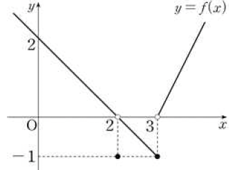
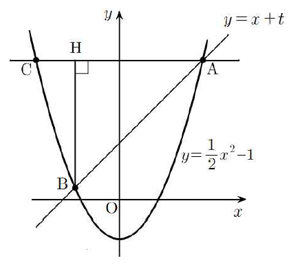
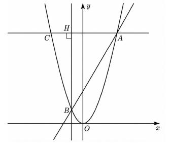
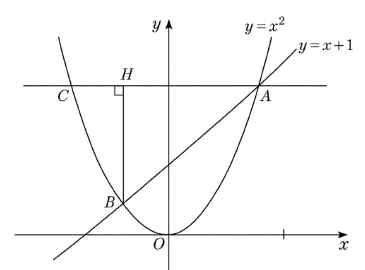
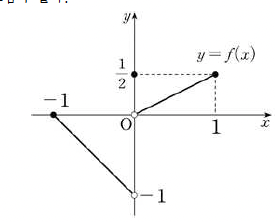

함수 $f(x)=\begin{cases}-x-3 & (x<-1)\\ \frac12(x-1)^2 & (x\ge-1)\end{cases}$이다. $\displaystyle\lim_{x\to-1}|f(x)-k|$의 값이 존재하도록 하는 상수 $k$에 대하여 $\displaystyle\lim_{x\to a}\frac{f(x)}{|f(x)-k|}$의 값이 존재하지 않도록 하는 모든 실수 $a$의 값의 합은?
두 다항함수 $f(x)$, $g(x)$가 다음 조건을 만족시킬 때, $g(1)$의 값이 될 수 있는 모든 값의 합은?
(가) $\displaystyle\lim_{x\to0}\frac{f(x)+g(x)-11}{x}=-2$
(나) 모든 실수 $x$에 대하여 $\{f(x)+x\}\{g(x)-2\}=x^2\{f(x)+9\}$이다.
두 다항함수 $f(x)$, $g(x)$가 다음 조건을 만족시킬 때, $\displaystyle\lim_{x\to0}\frac{f(x)g(x)\{g(x)-2\}}{x^2}$의 값이 될 수 있는 모든 값의 합은?
(가) $\displaystyle\lim_{x\to0}\frac{f(x)+g(x)-2}{x}=5$
(나) 모든 실수 $x$에 대하여 $\{f(x)+x\}\{g(x)-2\}=x^2\{f(x)+8\}$이다.
양수 $a$에 대하여 함수 $f(x)=x|x-a|$가 $\displaystyle\lim_{x\to0}\frac{f(x)f(-x)}{x^2}=-\frac12$을 만족시킬 때, $\displaystyle\lim_{x\to a+}\frac{f(x)f(-x)}{x-a}$의 값은?
양수 $a$에 대하여 함수 $f(x)=|x(x-a)|$가 $\displaystyle\lim_{x\to0}\frac{f(x)f(-x)}{x^2}=4$를 만족시킬 때, $\displaystyle\lim_{x\to a-}\frac{f(x)f(-x)}{x-a}$의 값은?
두 다항함수 $f(x)$, $g(x)$가 모든 실수 $x$에 대하여 $-2x^2+2\le f(x)+g(x)\le -4x+4$를 만족시키고, $\displaystyle\lim_{x\to1}\frac{2f(x)+g(x)}{f(x)+2g(x)}=5$일 때, $\displaystyle\lim_{x\to1}\frac{f(x)-g(x)}{x-1}$의 값은?
양수 $a$와 최고차항의 계수가 $1$인 이차함수 $f(x)$에 대하여 $\displaystyle\lim_{x\to2}\frac{f(x)f(x-a)}{(x-2)^2}=9$일 때, $f(5)$의 값이 될 수 있는 모든 값의 합을 구하시오.
삼차함수 $f(x)$가 $\displaystyle\lim_{x\to1}\frac{f(x)-f(-1)}{x^2-1}=3$, $\displaystyle\lim_{x\to0}\frac{f(x+1)}{f(x-1)}=-3$을 만족시킬 때, $f(3)$의 값은?
삼차함수 $f(x)$가 다음 조건을 만족시킬 때, $f(-3)$의 값을 구하시오.
(가) 집합 $\{-1,\,0,\,2\}$의 모든 원소 $a$에 대하여 $\displaystyle\lim_{x\to a}\frac{xf(x)-2a}{x^2-a^2}$의 값이 존재한다.
(나) $\displaystyle\lim_{x\to3}\frac{x-1}{f(x)}=-1$
일차함수 $f(x)$와 이차함수 $g(x)$가 다음 조건을 만족시킬 때, $\dfrac{f(3)}{g(0)}$의 값은?
(가) $\left\{a\,\middle|\,\displaystyle\lim_{x\to a}g(x)=0\right\}=\{-1\}$
(나) $\left\{b\,\middle|\,\displaystyle\lim_{x\to b}\frac{1}{g(x)-f(x)}\text{의 값이 존재하지 않는다.}\right\}=\{1\}$
삼차함수 $f(x)$와 일차함수 $g(x)$가 모든 실수 $x$에 대하여 $f(x)=2x^3-x^2g(x)-2x$를 만족시킨다. $\displaystyle\lim_{x\to0}\frac{g(x)}{f(x)+g(x)}=-\frac12$일 때, $g(-3)$의 값은?
다항식 $f(x)$를 $(x-2)^2$으로 나누었을 때의 몫을 $Q(x)$, 나머지를 $R(x)$라 하자. $Q(2)=R(2)$일 때, $\displaystyle\lim_{x\to2}\frac{f(x)+2x}{f(x)-R(x)}=k$이다. 상수 $k$의 값은?
다항식 $f(x)$를 $(x-3)^2$으로 나누었을 때의 몫을 $Q(x)$, 나머지를 $R(x)$라 하자. $Q(3)=R(3)$일 때, $\displaystyle\lim_{x\to3}\frac{f(x)+3x^2}{f(x)-R(x)}=k$이다. 상수 $k$의 값은?
두 실수 $a$, $b$와 최고차항의 계수가 $1$인 사차함수 $f(x)$에 대하여 두 집합 $A$, $B$를 각각 $A=\left\{a\,\middle|\,\displaystyle\lim_{x\to a}\frac{x^3(x-1)}{f(x)}\text{의 값이 존재한다.}\right\}$, $B=\left\{b\,\middle|\,\displaystyle\lim_{x\to b}\frac{f(x)}{x^2(x-1)^4}\text{의 값이 존재하지 않는다.}\right\}$라 하자. $0\in(A-B)$, $1\in(B-A)$이고 $\displaystyle\lim_{x\to3}f(x)=36$일 때, $f(4)$의 값을 구하시오.
$t$가 $\frac18$보다 큰 실수일 때, 곡선 $y=tx^2+1$ 위의 점 $\mathrm{P}$에서 직선 $y=x-1$에 내린 수선의 발을 $\mathrm{Q}$라 하자. 선분 $\mathrm{PQ}$의 길이가 최소일 때, 직선 $\mathrm{OP}$가 직선 $y=x-1$과 만나는 점을 $\mathrm{R}$라 하고, 삼각형 $\mathrm{PQR}$의 넓이를 $S(t)$라 하자. $\displaystyle\lim_{t\to\frac18+}\frac{S(t)}{\left(t-\frac18\right)^2}$의 값을 구하시오. (단, $\mathrm{O}$는 원점이고, 점 $\mathrm{P}$는 제1사분면에 있다.)
함수 $f(x)=\begin{cases}x^2-x & (x<2,\ x\neq1)\\ 3 & (x=1)\\ x^2+x & (x\ge2)\end{cases}$와 이차함수 $g(x)$가 다음 조건을 만족시킬 때, $g(1)$의 값은?
(가) $\displaystyle\lim_{x\to0}\frac{g(x)}{f(x+1)}=2$
(나) $\displaystyle\lim_{x\to-1-}f(1-x)g(x)=\lim_{x\to1-}f(x+1)g(x)$
함수 $f(x)=\begin{cases}x+1 & (x<0)\\ (x-\alpha)(x-\beta)(x-\gamma) & (0\le x<1)\\ -x+3 & (x\ge1)\end{cases}$에 대하여 $0\le x<1$에서 $f(x)=(x-\alpha)(x-\beta)(x-\gamma)>0$, $f(0)=1$, $\displaystyle\lim_{x\to1-}f(x)=0$이다. 최고차항의 계수가 $1$인 삼차함수 $g(x)$에 대하여 $-3<a<3$인 모든 실수 $a$에 대하여 $\displaystyle\lim_{x\to a}\frac{g(x)}{f(x)}$의 값이 존재할 때, $g(3)$의 값을 구하시오. (단, $\alpha$, $\beta$, $\gamma$는 서로 다른 상수이다.)
함수 $y=f(x)$의 그래프가 다음 그림과 같다. 최고차항의 계수가 $1$인 이차함수 $g(x)$에 대하여 $\displaystyle\lim_{x\to0+}\frac{g(x)}{f(x+2)}$와 $\displaystyle\lim_{x\to3+}\frac{g(x+2)}{f(x)}$의 값이 모두 존재할 때, $g(6)$의 값은?

다음 조건을 만족시키는 두 실수 $a$, $b$의 모든 순서쌍 $(a,\,b)$의 개수는?
(가) $\displaystyle\lim_{x\to1}\frac{x-1}{x^2-a}=b$
(나) $\displaystyle\lim_{x\to0}\left|\frac{x^3+ax^2+bx}{x^k}\right|=1$인 자연수 $k$가 존재한다.
양의 실수 $t$에 대하여 좌표평면 위에 네 점 $\mathrm{A}(t,\,0)$, $\mathrm{B}(0,\,1)$, $\mathrm{C}(0,\,t)$, $\mathrm{D}(-1,\,0)$이 있다. 곡선 $y=\sqrt x$가 선분 $\mathrm{AB}$와 만나는 점을 $\mathrm{P}$, 곡선 $y=x^2\,(x<0)$이 선분 $\mathrm{CD}$와 만나는 점을 $\mathrm{Q}$라 하자. 원점 $\mathrm{O}$에 대하여 삼각형 $\mathrm{OAP}$의 넓이를 $S(t)$, 삼각형 $\mathrm{OQD}$의 넓이를 $T(t)$라 할 때, $\displaystyle\lim_{t\to0+}\frac{tT(t)}{S(t)}$의 값은?
두 다항함수 $f(x)$, $g(x)$가 다음 조건을 만족시킨다. $f(0)=1$, $f(1)=3$, $g(0)=5$일 때, $g(6)$의 값을 구하시오.
(가) $\displaystyle\lim_{x\to0+}x^2f\!\left(\frac1x\right)=4$
(나) $\displaystyle\lim_{x\to-\infty}\frac{f(x)-2g(x)}{\sqrt{x^2+1}}=3$
곡선 $y=x^2-2x$ 위의 점 $\mathrm{P}(t,\,t^2-2t)\,(0<t<2)$를 지나고 기울기가 $-3$인 직선이 곡선 $y=x^2-2x$와 만나는 점 중 $\mathrm{P}$가 아닌 점을 $\mathrm{Q}$라 하자. 선분 $\mathrm{OQ}$의 길이를 $L(t)$라 할 때, $\displaystyle\lim_{t\to0+}\{L(t)\}^2$의 값은? (단, $\mathrm{O}$는 원점이다.)
한 변의 길이가 $1$인 정사각형 $\mathrm{ABCD}$가 있다. ($\mathrm A$는 왼쪽 위, $\mathrm D$는 오른쪽 위, $\mathrm B$는 왼쪽 아래, $\mathrm C$는 오른쪽 아래 꼭짓점) $0<t<1$인 실수 $t$에 대하여 선분 $\mathrm{CD}$ 위에 점 $\mathrm P$를 $\overline{\mathrm{CP}}=t$가 되도록 잡고 선분 $\mathrm{AB}$ 위에 점 $\mathrm Q$를 $\overline{\mathrm{BQ}}=\frac t2$가 되도록 잡을 때, 선분 $\mathrm{BP}$와 선분 $\mathrm{CQ}$의 교점을 $\mathrm R$이라 하자. 삼각형 $\mathrm{CPR}$의 넓이를 $S(t)$라 할 때, $\displaystyle\lim_{t\to0+}\frac{S(t)}{t}$의 값은?
다항함수 $f(x)$가 $\displaystyle\lim_{x\to\infty}\frac{f(x)}{x^3}=1$, $\displaystyle\lim_{x\to-1}\frac{f(x)}{x^2-1}=2$를 만족시킨다. $f(1)\le12$일 때, $f(2)$의 최댓값은?
상수항과 계수가 모두 정수인 두 다항함수 $f(x)$, $g(x)$가 다음 조건을 만족시킬 때, $f(2)$의 최댓값은?
(가) $\displaystyle\lim_{x\to\infty}\frac{f(x)g(x)}{x^3}=2$
(나) $\displaystyle\lim_{x\to0}\frac{f(x)g(x)}{x^2}=4$
실수 $t\,(t>0)$에 대하여 직선 $y=x+t$와 곡선 $y=x^2+x$가 만나는 두 점을 $\mathrm A$, $\mathrm B$라 하자. 점 $\mathrm A$를 지나고 $x$축에 평행한 직선이 곡선 $y=x^2+x$와 만나는 점 중 $\mathrm A$가 아닌 점을 $\mathrm C$, 점 $\mathrm B$에서 직선 $\mathrm{AC}$에 내린 수선의 발을 $\mathrm H$라 하자. $\displaystyle\lim_{t\to0+}\left(\overline{\mathrm{AH}}-\overline{\mathrm{CH}}\right)$의 값은? (단, 점 $\mathrm A$의 $x$좌표는 양수이다.)
실수 $t\,(t>0)$에 대하여 직선 $y=x+t$와 곡선 $y=\frac12x^2-1$이 만나는 두 점을 $\mathrm A$, $\mathrm B$라 하자. 점 $\mathrm A$를 지나고 $x$축에 평행한 직선이 곡선 $y=\frac12x^2-1$과 만나는 점 중 $\mathrm A$가 아닌 점을 $\mathrm C$, 점 $\mathrm B$에서 선분 $\mathrm{AC}$에 내린 수선의 발을 $\mathrm H$라 하자. $\displaystyle\lim_{t\to\infty}\frac{\overline{\mathrm{AB}}\times\overline{\mathrm{AH}}}{t}$의 값은? (단, 점 $\mathrm A$의 $x$좌표는 양수이다.)

실수 $t\,(t>0)$에 대하여 직선 $y=3x+t^2+3t$와 곡선 $y=x^2$이 만나는 두 점을 $\mathrm A$, $\mathrm B$라 하자. 점 $\mathrm A$를 지나고 $x$축에 평행한 직선이 곡선 $y=x^2$과 만나는 점 중 $\mathrm A$가 아닌 점을 $\mathrm C$, 점 $\mathrm B$에서 선분 $\mathrm{AC}$에 내린 수선의 발을 $\mathrm H$라 하자. $\displaystyle\lim_{t\to0+}\frac{\overline{\mathrm{AH}}-\overline{\mathrm{CH}}}{t}$의 값은? (단, $\mathrm A$의 $x$좌표가 $\mathrm B$의 $x$좌표보다 크다.)

실수 $t\,(t>0)$에 대하여 직선 $y=x+t$와 곡선 $y=x^2$이 만나는 두 점을 $\mathrm A$, $\mathrm B$라 하자. 점 $\mathrm A$를 지나고 $x$축에 평행한 직선이 곡선 $y=x^2$과 만나는 점 중 $\mathrm A$가 아닌 점을 $\mathrm C$, 점 $\mathrm B$에서 선분 $\mathrm{AC}$에 내린 수선의 발을 $\mathrm H$라 할 때, 다음 물음에 답하시오. (단, 점 $\mathrm A$의 $x$좌표는 양수이다.)

(1) $\overline{\mathrm{AH}}$를 $t$의 식으로 나타내시오.
(2) $\overline{\mathrm{CH}}$를 구하시오.
(3) $\displaystyle\lim_{t\to0+}\frac{\overline{\mathrm{AH}}-\overline{\mathrm{CH}}}{t}$의 값을 구하고, 풀이 과정을 서술하시오.
실수 $t\,(0<t<1)$에 대하여 곡선 $y=x^2$ 위의 점 중에서 직선 $y=2tx-2$와의 거리가 최소인 점을 $\mathrm P$라 하고, 직선 $\mathrm{OP}$가 직선 $y=2tx-2$와 만나는 점을 $\mathrm Q$라 할 때, $\displaystyle\lim_{t\to1-}\overline{\mathrm{PQ}}$의 값은? (단, $\mathrm O$는 원점이다.)
최고차항의 계수가 $1$인 이차함수 $f(x)$에 대하여 $\displaystyle\lim_{x\to a}\frac{f(x+2)}{x\{f(x)-3\}}$의 값이 $a=0$일 때 존재하고 $a=3$일 때 존재하지 않는다. $f(4)$의 값은?
다음 조건을 만족시키는 모든 다항함수 $f(x)$에 대하여 $f(1)$의 최댓값은?
$\displaystyle\lim_{x\to\infty}\frac{f(x)-4x^3-3x^2}{x^{n+1}+1}=6$, $\displaystyle\lim_{x\to0}\frac{f(x)}{x^n}=4$인 자연수 $n$이 존재한다.
다음 조건을 만족시키는 모든 다항함수 $f(x)$에 대하여 $f(1)$의 최솟값과 최댓값의 합은?
$\displaystyle\lim_{x\to\infty}\frac{f(x)-2x^4+5x^3-4x^2}{2x^{n+1}+3}=3$, $\displaystyle\lim_{x\to0}\frac{f(x)}{x^n}=1$인 자연수 $n$이 존재한다.
다음 조건을 만족시키는 모든 다항함수 $f(x)$에 대하여 가능한 모든 서로 다른 $f(1)$의 값의 합은?
$\displaystyle\lim_{x\to\infty}\frac{f(x)+2x^3-3x^2}{x^{n+1}+1}=4$, $\displaystyle\lim_{x\to0}\frac{f(x)}{x^n}=-1$을 만족시키는 자연수 $n$이 존재한다.
다항함수 $f(x)$가 다음 조건을 만족시킨다. 조건을 만족하는 $f(-1)$의 최댓값과 최솟값의 합은?
(가) 다항함수 $f(x)$의 계수는 모두 정수이다.
(나) $\displaystyle\lim_{x\to\infty}\frac{f(x)-4x^3+3x^2}{x^{n+1}+1}$이 존재하도록 하고, $\displaystyle\lim_{x\to0}\frac{f(x)}{x^n}=4$가 되도록 하는 자연수 $n$이 존재한다.
(다) 방정식 $f(x)=0$은 열린구간 $(1,\,2)$에서 적어도 하나의 실근을 갖는다.
함수 $f(x)=(x-1)(x-2)$와 최고차항의 계수가 자연수인 사차함수 $g(x)$가 다음 조건을 만족시킨다. $g(-1)$의 값이 될 수 있는 모든 값의 합을 구하시오.
모든 실수 $a$에 대하여 $\displaystyle\lim_{x\to a}\frac{g(x)\times|f(x)|}{f(x)}$의 값과 $\displaystyle\lim_{x\to a}\frac{|g(x)-f(x)|}{g(x)}$의 값이 모두 존재한다.
함수 $f(x)=(x+1)(x-2)$와 최고차항의 계수가 $1$인 삼차함수 $g(x)$가 다음 조건을 만족시킨다. $g'(3)$의 값은?
(가) $g(0)g'(0)<0$
(나) 모든 실수 $a$에 대하여 $\displaystyle\lim_{x\to a}\frac{g(x)\times|f(x)|}{f(x)}$의 값과 $\displaystyle\lim_{x\to a}\frac{g(x-1)g(x+3)}{|f(x)|-4}$의 값이 존재한다.
함수 $f(x)=(x-3)(x-4)$와 최고차항의 계수가 $1$인 사차함수 $g(x)$가 다음 조건을 만족시킨다. $g(-1)$의 값을 구하시오.
모든 실수 $a$에 대하여 $\displaystyle\lim_{x\to a}\frac{g(x)\times|f(x)|}{f(x)}$의 값과 $\displaystyle\lim_{x\to a}\frac{|g(x)-f(x)|}{g(x)}$의 값이 모두 존재한다.
이차함수 $f(x)$와 최고차항의 계수가 $1$인 사차함수 $g(x)$가 다음 조건을 만족시킨다. $\displaystyle\lim_{x\to-3}\frac{\sqrt{|g(x)|+\{g(t)\}^2}-|g(t)|}{|x+3|}$의 값이 존재하지 않는 실수 $t$의 값은 $\alpha$, $\beta$, $\gamma$뿐일 때, $g(2)$의 최솟값은? (단, $\alpha$, $\beta$, $\gamma$는 서로 다른 실수이다.)
(가) $\displaystyle\lim_{x\to a}\frac{|f(x)|+f(x)}{x-a}$의 값이 존재하는 실수 $a$의 범위는 $1<a<3$이다.
(나) 모든 실수 $b$에 대하여 $\displaystyle\lim_{x\to b}\frac{g(x)\times|f(x)|}{f(x)}$의 값이 존재한다.
최고차항의 계수가 $1$인 두 삼차함수 $f(x)$, $g(x)$가 다음 조건을 만족시킨다. $g(5)$의 값은?
(가) $g(3)=0$
(나) $\displaystyle\lim_{x\to n}\frac{f(x)}{g(x)}=(n-1)(n-2)$ ($n=1,\,2,\,3,\,4$)
최고차항의 계수가 $1$인 두 삼차함수 $f(x)$, $g(x)$가 다음 조건을 만족시킨다. $f(3)+g(5)$의 값은?
(가) $\displaystyle\lim_{x\to1}\frac{f(x)-g(x)}{x-1}=5$
(나) $\displaystyle\lim_{x\to n}\frac{f(x)}{g(x)}=(n-1)(n-2)$ $(n=1,\,2,\,3)$
함수 $f(x)=x^2+6x+12$에 대하여 다음 조건을 만족시키는 모든 정수 $k$의 개수는?
모든 실수 $a$에 대하여 $\displaystyle\lim_{x\to a}\frac{x}{(f(x))^2-k(x+2)f(x)}$의 값이 존재한다.
함수 $f(x)=x^2-4x+6$에 대하여 다음 조건을 만족시키는 정수 $k$의 최댓값과 최솟값의 합은?
모든 실수 $a$에 대하여 $\displaystyle\lim_{x\to a}\frac{(x-4)^2}{\{f(x)\}^2+k\left(x-\frac52\right)f(x)}$의 값이 존재한다.
함수 $f(x)=x^2+3x+3$에 대하여 다음 조건을 만족시키는 모든 정수 $k$의 개수를 구하시오.
모든 실수 $a$에 대하여 $\displaystyle\lim_{x\to a}\frac{x^2}{\{f(x)\}^2-k(x+1)f(x)}$의 값이 존재한다.
정수 $k$와 이차함수 $f(x)=x^2-4x+7$에 대하여, $a>k+1$인 모든 실수 $a$에 대하여 $\displaystyle\lim_{x\to a}\frac{(x+1)^2}{f(x)\{f(x)-k(x-1)\}}$의 값이 존재한다. 이때 모든 정수 $k$의 값의 합은?
함수 $f(x)=x^3+ax^2+bx+4$가 다음 조건을 만족시키도록 하는 두 정수 $a$, $b$에 대하여 $f(-2)+20$의 최솟값을 구하시오.
모든 실수 $\alpha$에 대하여 $\displaystyle\lim_{x\to\alpha}\frac{f(2x+1)}{f(x)}$의 값이 존재한다.
상수 $k$에 대하여 함수 $f(x)=x^2+kx+k-1$이 다음을 만족시킨다. $\displaystyle\lim_{x\to k}\frac{f(x)-f(k)}{x-k}$의 값은?
모든 실수 $\alpha$에 대하여 $\displaystyle\lim_{x\to\alpha}\frac{f(2x+1)}{f(x)}$의 값이 존재한다.
일차함수 $f(x)$에 대하여 $\displaystyle\lim_{x\to a}\frac{f(x+4)}{x\{f(x)+10\}}$의 값이 $a=0$일 때 존재하고 $a=2$일 때 존재하지 않는다. $f(10)$의 값은?
일차함수 $f(x)$에 대해서 $\displaystyle\lim_{x\to a}\frac{f(x+2)}{x\{f(x)-3\}}$의 값이 $a=0$일 때 존재하고, $a=3$일 때 존재하지 않는다. $f(5)$의 값은?
실수 $a$와 양수 $b$에 대하여 함수 $f(x)=\begin{cases}x+a & (x<-1)\\ x & (-1\le x<3)\\ bx-2 & (x\ge3)\end{cases}$이다. 함수 $|f(x)|$가 실수 전체의 집합에서 연속일 때, $a+b$의 값이 될 수 있는 모든 값의 합은?
$k>-2$인 실수 $k$에 대하여 함수 $f(x)=\begin{cases}-2x^2-4x+6 & (x<1)\\ 2x+k & (x\ge1)\end{cases}$이다. 실수 $t$에 대하여 닫힌구간 $[t,\,t+1]$에서 함수 $f(x)$의 최댓값을 $g(t)$라 하자. 함수 $g(t)$가 실수 전체의 집합에서 연속일 때, $g(2)$의 최댓값을 구하시오.
이차항의 계수가 양수인 이차함수 $f(x)$에 대하여 함수 $g(x)=\begin{cases}\frac14 & (x<1)\\ \dfrac{1}{f(x)} & (1\le x\le3)\\ \frac19 & (x>3)\end{cases}$가 실수 전체의 집합에서 연속이다. 함수 $y=f(x)$의 그래프가 $y$축과 만나는 점의 좌표를 $(0,\,k)$라 할 때, 가능한 자연수 $k$의 개수를 구하시오.
함수 $f(x)=\begin{cases}x^2-4 & (x\le0)\\ 4-x & (x>0)\end{cases}$에 대하여 함수 $f(x)f(x-a)$가 $x=a$에서 연속이 되도록 하는 실수 $a$의 개수를 구하시오.
실수 전체의 집합에서 연속인 함수 $f(x)$가 모든 실수 $x$에 대하여 $\{f(x)\}^3-\{f(x)\}^2-x^2f(x)+x^2=0$을 만족시킨다. 함수 $f(x)$의 최솟값이 $0$일 때, $f\left(-\frac43\right)+f(0)+f\left(\frac12\right)$의 최댓값은?
함수 $f(x)=\begin{cases}\dfrac{1}{(x+1)(x-4)} & (x\neq-1,\ x\neq4)\\ 1 & (x=-1\ \text{또는}\ x=4)\end{cases}$가 닫힌구간 $[a-1,\,a+1]$에서 최솟값을 갖도록 하는 정수 $a\,(-10<a<10)$의 개수를 구하시오.
모든 자연수 $k$에 대하여 두 곡선 $y=x^3+k$, $y=2x^2-2x$는 한 점에서만 만난다. 두 곡선의 교점의 $x$좌표를 $a_k$라 할 때, $-2\le a_k\le-1$이 되도록 하는 자연수 $k$의 개수는?
$-12\le x\le12$에서 정의되고 연속인 함수 $f(x)$가 다음 조건을 만족시킨다. <보기>에서 옳은 것만을 있는 대로 고른 것은?
(가) $-2\le x\le2$에서 $f(x)=3$과 $f(x)=-3$을 만족시키는 $x$의 값은 각각 오직 한 개씩 있다.
(나) $-12\le x\le4$인 모든 실수 $x$에 대하여 $f(x)=f(x+4)$이다.
ㄱ. $f(-2)=f(2)$
ㄴ. 함수 $f(x)$의 최댓값과 최솟값의 합은 $0$이다.
ㄷ. 방정식 $f(x)=0$의 서로 다른 실근의 개수는 적어도 $12$이다.
$-12\le x\le12$에서 정의되고 연속인 함수 $f(x)$가 다음 조건을 만족시킨다. <보기>에서 옳은 것만을 있는 대로 고른 것은?
(가) $-2\le x\le2$에서 $f(x)=3$과 $f(x)=-3$을 만족시키는 $x$의 값은 각각 적어도 한 개씩 있다.
(나) $-12\le x\le8$인 모든 실수 $x$에 대하여 $f(x)=f(x+4)$이다.
ㄱ. $f(-2)=f(2)$
ㄴ. 함수 $f(x)$의 최댓값과 최솟값의 합은 $0$이다.
ㄷ. 방정식 $f(x)=0$의 서로 다른 실근의 개수는 적어도 $12$이다.
두 함수 $f(x)=x^3+x^2$, $g(x)=x-2$와 $10$ 이하의 자연수 $n$에 대하여 $x$에 대한 방정식 $f(x)=ng(x)$는 $n$의 값에 관계없이 오직 하나의 실근을 갖는다. 이 실근이 닫힌구간 $[-3,\,-2]$에 속하도록 하는 $10$ 이하의 모든 자연수 $n$의 값의 합을 구하시오.
최고차항의 계수가 $1$인 삼차함수 $f(x)$에 대하여 실수 전체의 집합에서 연속인 함수 $g(x)$가 다음 조건을 만족시킨다. $f(1)$의 값이 자연수일 때, $f(1)$의 값이 될 수 있는 모든 값의 합은?
(가) $g(x)=\begin{cases}\dfrac{x}{f(x)} & (x\neq0)\\ \dfrac13 & (x=0)\end{cases}$
(나) 구간 $(0,\,1]$에서 방정식 $g(x)=\frac12$은 오직 하나의 실근을 갖는다.
좌표평면 위의 점 $\mathrm P(3,\,4)$를 중심으로 하고 반지름의 길이가 $r\,(r>0)$인 원 $C$와 실수 $m$에 대하여 원 $C$와 직선 $y=mx$가 만나는 점의 개수를 $f(m)$이라 하자. <보기>에서 옳은 것만을 있는 대로 고른 것은?
ㄱ. $f(1)=1$이면 $r=\frac{\sqrt2}{2}$이다.
ㄴ. $r>5$이면 모든 실수 $m$에 대하여 $f(m)=2$이다.
ㄷ. 함수 $f(m)$이 $m=k$에서 불연속인 실수 $k$의 개수가 $1$이 되도록 하는 모든 $r$의 값의 합은 $5$이다.
실수 전체의 집합에서 연속이고 모든 실수 $x$에 대하여 $f(x)\neq0$인 함수 $f(x)$와 $\displaystyle\lim_{x\to1+}g(x)>\lim_{x\to1-}g(x)$인 함수 $g(x)$가 있다. 두 함수 $f(x)$, $g(x)$가 다음 조건을 만족시킬 때, $10f(1)$의 값을 구하시오.
(가) 함수 $|f(x)g(x)|$는 실수 전체의 집합에서 연속이다.
(나) $x<1$일 때 $f(x)g(x)=x^2-2x-8$이고, $x>1$일 때 $\dfrac{g(x)}{f(x)}=3x+1$이다.
최고차항의 계수가 $1$인 이차함수 $f(x)$와 세 실수 $a$, $b$, $c$가 다음 조건을 만족시킨다. $f(0)>0$일 때, $f(-1)$의 값은?
(가) 함수 $g(x)=\dfrac{x}{f(x^2+4)}$는 $x=a$에서만 불연속이다.
(나) 함수 $h(x)=\dfrac{f(x-4)}{f(x^2)}$는 $x=b$, $x=c\,(b<c)$에서만 불연속이다.
실수 $t$에 대하여 함수 $f(x)=\left|\frac12x^2-8\right|$의 그래프가 직선 $y=ax+t\,(a>0)$과 만나는 서로 다른 점의 개수를 $g(t)$라 하자. 양수 $k$에 대하여 $a=k$일 때, 함수 $g(t)$가 $t=\alpha$에서 불연속이 되도록 하는 실수 $\alpha$의 개수를 $N(k)$라 하자. $\displaystyle\sum_{k=1}^{10}N(k)$의 값을 구하시오.
함수 $f(x)=\dfrac{ax+b}{x-2}$와 양의 실수 $t$에 대하여 $x$에 대한 방정식 $|f(x)|=t$의 서로 다른 실근의 개수를 $g(t)$라 하고, $x$에 대한 방정식 $|f(x)|=tx$의 서로 다른 실근의 개수를 $h(t)$라 할 때, 두 함수 $g(t)$, $h(t)$가 다음 조건을 만족시킨다. $f(4)+h(4)=11$일 때, $f(b)$의 값은? (단, $a$, $b$는 상수이고, $2a+b\neq0$, $b>0$이다.)
(가) 함수 $g(t)$는 $t=b$에서만 불연속이다.
(나) 함수 $h(t)$가 불연속인 양수 $t$가 존재한다.
함수 $f(x)=x^2-2x+a$와 실수 $t$에 대하여 $x$에 대한 방정식 $|f(x)|=t$의 서로 다른 실근의 개수를 $g(t)$라 하면 함수 $g(t)$는 $t=2$에서만 불연속이다. $f(a)$의 값을 구하시오. (단, $a$는 상수이다.)
함수 $f(x)=\begin{cases}-3x(x-1) & (x<2)\\ (x-4)(x-6) & (x\ge2)\end{cases}$일 때, 함수 $f(x-1)f(x-a)$가 $x=3$에서 연속이 되도록 하는 모든 실수 $a$의 값의 합은?
이차함수 $f(x)$가 다음 조건을 만족시킨다. $f(4)$의 값을 구하시오.
(가) 함수 $\dfrac{x}{f(x)}$는 $x=1$, $x=2$에서 불연속이다.
(나) $\displaystyle\lim_{x\to2}\frac{f(x)}{x^2-4}=4$
실수 $t$에 대하여 직선 $y=t$가 곡선 $y=|x^2-2x|\ (x\ge0)$와 만나는 점의 개수를 $f(t)$라 하자. 최고차항의 계수가 $1$인 이차함수 $g(t)$에 대하여 함수 $f(t)g(t)$가 모든 실수 $t$에서 연속일 때, $f(3)+g(3)$의 값을 구하시오.
최고차항의 계수가 $1$인 삼차함수 $f(x)$에 대하여 실수 전체의 집합에서 연속인 함수 $g(x)$가 다음 조건을 만족시킨다. $f(1)$이 자연수일 때, $g(2)$의 최솟값은?
(가) 모든 실수 $x$에 대하여 $f(x)g(x)=x(x+3)^2$이다.
(나) $g(0)=1$
최고차항의 계수가 $1$인 삼차함수 $f(x)$에 대하여 실수 전체의 집합에서 연속인 함수 $g(x)$가 다음 조건을 만족시킨다고 할 때, $g(2)$의 최솟값은?
(가) 모든 실수 $x$에 대하여 $f(x)g(x)=x(x+4)$
(나) $g(0)=1$
(다) $f(x)$의 모든 계수(상수항 포함)는 모두 정수이다.
최고차항의 계수가 $1$인 삼차함수 $f(x)$에 대하여 함수 $g(x)$를 $g(x)=\begin{cases}\dfrac{f(x+3)\{f(x)+1\}}{f(x)} & (f(x)\neq0)\\ 3 & (f(x)=0)\end{cases}$이라 하자. $\displaystyle\lim_{x\to3}g(x)=g(3)-\frac52$일 때, $g(5)$의 값은?
최고차항의 계수가 양수인 삼차함수 $f(x)$와 실수 $t$에 대하여 함수 $g(x)=\begin{cases}-f(x) & (x<t)\\ f(x) & (x\ge t)\end{cases}$는 실수 전체의 집합에서 연속이고 다음 조건을 만족시킨다. $g(-5)$의 값을 구하시오. (단, $g(-1)\neq\frac72g(1)$)
(가) 모든 실수 $a$에 대하여 $\displaystyle\lim_{x\to a+}\frac{g(x)}{x(x-2)}$의 값이 존재한다.
(나) $\displaystyle\lim_{x\to m+}\frac{g(x)}{x(x-2)}$의 값이 음수가 되도록 하는 자연수 $m$의 집합은 $\left\{g(-1),\,\frac72g(1)\right\}$이다.
닫힌구간 $[-1,\,1]$에서 정의된 함수 $y=f(x)$의 그래프가 다음 그림과 같다. 닫힌구간 $[-1,\,1]$에서 두 함수 $g(x)$, $h(x)$가 $g(x)=f(x)+|f(x)|$, $h(x)=f(x)+f(-x)$일 때, <보기>에서 옳은 것만을 있는 대로 고른 것은?

ㄱ. $\displaystyle\lim_{x\to0}g(x)=0$
ㄴ. $g(0)=1$
ㄷ. 함수 $|h(x)|$는 $x=0$에서 불연속이다.
두 양수 $a$, $b\,(b>5)$와 최고차항의 계수가 $1$인 이차함수 $f(x)$에 대하여 함수 $g(x)=\begin{cases}(x+5)f(x) & (x<0)\\ (x+a)f(x-b) & (x\ge0)\end{cases}$이 실수 전체의 집합에서 연속이고 다음 조건을 만족시킬 때, $g(6)$의 값은?
$\displaystyle\lim_{x\to-5}\frac{\sqrt{|g(x)|+\{g(t)\}^2}-|g(t)|}{(x+5)^2}$의 값이 존재하지 않는 실수 $t$의 값은 $-5$, $10$뿐이다.
다항함수 $f(x)$가 다음 조건을 만족시킬 때, $\displaystyle\lim_{x\to-2}\frac{f(x)-f(-2)}{x^2+7x+10}$의 값을 구하시오.
(가) $x$의 값이 $-2$에서 $1$까지 변할 때의 함수 $y=f(x)$의 평균변화율과 $x=-2$에서의 미분계수가 서로 같다.
(나) $\displaystyle\lim_{h\to0}\frac{f(-2-h)-(1-h)f(-2)}{h}=f(1)-60$
함수 $f(x)$가 다음 조건을 만족시킨다. 함수 $f(x)$가 실수 전체의 집합에서 미분가능하도록 하는 양수 $k$에 대하여 $f(10)$의 값을 구하시오.
(가) $0\le x\le k$일 때, $f(x)=x^3-6x^2+10x$
(나) 모든 실수 $x$에 대하여 $f(x+k)=f(x)+f(k)$이다.
함수 $f(x)=(x-2)\left|(x-a)(x-b)\right|$이 실수 전체의 집합에서 미분가능하도록 하는 한 자리의 자연수 $a$, $b$의 모든 순서쌍 $(a,\,b)$의 개수는?
다항함수 $f(x)$가 모든 실수 $x$에 대하여 $\displaystyle\lim_{h\to0}\frac{f(h)f(x+h)-f(h)f(x)}{h}=2x^3+4$를 만족시킨다. $f(0)=1$, $f'(0)=4$일 때, $f'(3)$의 값을 구하시오.
최고차항의 계수가 $1$인 다항함수 $f(x)$가 $\displaystyle\lim_{x\to\infty}\frac{f(x)}{xf'(x)}=\frac13$, $\displaystyle\lim_{x\to0}\frac{f(x)}{xf'(x)}=\frac12$, $f(1)f(-1)=f(2)-9$을 만족시킬 때, $f(3)$의 값을 구하시오.
다항함수 $f(x)$와 실수 전체의 집합에서 미분가능한 함수 $g(x)$는 모든 실수 $x$에 대하여 $(x^2-1)g(x)=f(x)-2$를 만족시킨다. 함수 $h(x)=f(x)g(x)$에 대하여 $f'(-1)=-2$, $h'(-1)=6$일 때, $g'(-1)$의 값을 구하시오.
삼차 이하의 다항함수 $f(x)$가 다음 조건을 만족시키고 $f(1)=14$일 때, 가능한 모든 $f'(1)$의 값의 합을 구하시오.
(가) $\displaystyle\lim_{x\to\infty}\frac{\{f(x)\}^2}{3x^2f(x)+f(x^2)}=3$
(나) $\displaystyle\lim_{x\to0}\frac{f(x)}{x}=2$
함수 $f(x)$는 최고차항의 계수가 $1$인 사차함수이고, 실수 $t$에 대하여 곡선 $y=f(x)$ 위의 점 $(t,\,f(t))$에서의 접선의 기울기를 함수 $g(t)$라 하자. $\left\{x\,\middle|\,\displaystyle\lim_{h\to0}\frac{f(x+h)-f(x)}{h}=2\right\}=\{-3,\,4\}$일 때, 가능한 모든 $g(-2)$의 값의 합을 구하시오.
두 함수 $f(x)=\begin{cases} -4x-2 & (x\le-1) \\ ax^2+bx-1 & (-1<x<2) \\ 2x+c & (x\ge2)\end{cases}$, $g(x)=-x^2+4ax+b-c$에 대하여 함수 $f(x)$가 실수 전체의 집합에서 미분가능할 때, $\displaystyle\lim_{h\to0}\frac{f(3+h)g(3+h)-f(3)g(3)}{h}$의 값은? (단, $a$, $b$, $c$는 상수이다.)
삼차함수 $f(x)$와 이차함수 $g(x)$가 다음 조건을 만족시킨다. 함수 $f'(x)$가 최댓값 $M$을 가질 때, $g'(M)$의 값을 구하시오.
(가) 두 함수 $f(x)$, $g(x)$는 모두 최고차항의 계수가 정수이다.
(나) 모든 실수 $x$에 대하여 $\displaystyle\lim_{h\to0}\frac{f\left(x+\frac h2\right)-f(x)}{h}\times\lim_{h\to0}\frac{g\left(x-\frac h3\right)-g(x)}{h}=-x^3-x^2+2$이다.
사차함수 $f(x)$에 대하여 함수 $g(x)=\begin{cases}\dfrac{f(x)}{x^2-4} & (|x|\neq2) \\ -x+a & (|x|=2)\end{cases}$라 하자. 함수 $g(x)$가 실수 전체의 집합에서 미분가능하고 $\displaystyle\lim_{x\to-2}\frac{g(x)-3}{f(x)}=-\frac14$일 때, $g(a)$의 값은? (단, $a$는 상수이다.)
함수 $f(x)$와 최고차항의 계수가 $1$인 삼차함수 $g(x)$가 다음 조건을 만족시킨다. $g(4)$의 값을 구하시오.
(가) 임의의 두 실수 $x_1$, $x_2\,(x_1<x_2)$에 대하여 $x$의 값이 $x_1$에서 $x_2$까지 변할 때의 함수 $y=f(x)$의 평균변화율은 $2$로 일정하다.
(나) 두 함수 $y=f(x)$, $y=g(x)$의 그래프는 점 $(1,\,3)$에서 만난다.
(다) 함수 $|f(x)-g(x)|$가 $x=3$에서만 미분가능하지 않다.
다항함수 $f(x)$가 다음 조건을 만족시킨다. 함수 $y=f(x)$의 그래프와 직선 $y=2$는 서로 다른 세 점 $\mathrm A$, $\mathrm B$, $\mathrm C$에서 만나고 점 $\mathrm B$는 선분 $\mathrm{AC}$를 $1:2$로 내분하는 점일 때, $f(1)$의 값을 구하시오. (단, 세 점 $\mathrm A$, $\mathrm B$, $\mathrm C$의 $x$좌표는 모두 정수이고 이 순서대로 커진다.)
(가) $\displaystyle\lim_{x\to\infty}\frac{f(x)}{x^3}=2$
(나) $\displaystyle\lim_{x\to0}\frac{f(x)-2}{x}=24$
다항함수 $f(x)$가 다음 조건을 만족시킨다. 함수 $y=f(x)$의 그래프와 직선 $y=2$는 서로 다른 세 점 $\mathrm A$, $\mathrm B$, $\mathrm C$에서 만나고 점 $\mathrm B$는 선분 $\mathrm{AC}$를 $2:1$로 내분하는 점일 때, $f(1)$의 최솟값은? (단, 원점 $\mathrm O$에 대하여 $\overline{\mathrm{OA}}<\overline{\mathrm{OB}}<\overline{\mathrm{OC}}$)
(가) $\displaystyle\lim_{x\to\infty}\frac{f(x)}{2x^3}=1$
(나) $\displaystyle\lim_{x\to0}\frac{f(x)-2}{x}=18$
함수 $f(x)=\begin{cases}|x+1| & (x\le -2) \\ 3x+1 & (x>-2)\end{cases}$가 있다. 최고차항의 계수가 $1$인 이차함수 $g(x)$에 대하여 함수 $f(x)g(x)$가 실수 전체의 집합에서 미분가능할 때, $g(4)$의 값은?
최고차항의 계수가 $1$인 이차함수 $f(x)$가 다음 조건을 만족시킬 때, $f(1)$의 값을 구하시오.
(가) 모든 실수 $x$에 대하여 $f'(x)+f'(8-x)=0$이다.
(나) $\displaystyle\sum_{k=1}^{10}\lim_{h\to0+}\frac{|f(k-3+h)-f(k-3-h)|}{h}=f(0)$
최고차항의 계수가 $1$인 이차함수 $f(x)$가 다음 조건을 만족시킬 때, $f(1)$의 값은?
(가) 모든 실수 $x$에 대하여 $f'(x)+f'(4-x)=0$
(나) $\displaystyle\sum_{k=1}^{10}\lim_{h\to0}\frac{f(k-3+2h)-f(k-3-h)}{h}=f(0)$
함수 $y=f(x)$의 그래프는 원점에 대하여 대칭이고, $f'(2)=-3$, $f'(4)=6$일 때, $\displaystyle\lim_{x\to-2}\frac{f(x^2)-f(4)}{f(x)-f(-2)}$의 값은?
좌표평면 위의 영역 $\{(x,\,y)\,|\,0\le x\le 4,\ 0\le y\le h(x)\}$ (단, $h(x)=\begin{cases}2 & (0\le x<1) \\ x & (1\le x<2) \\ 2 & (2\le x<3) \\ 3 & (3\le x\le 4)\end{cases}$)과 네 점 $(0,\,0)$, $(t,\,0)$, $(t,\,t)$, $(0,\,t)$를 꼭짓점으로 하는 정사각형이 겹치는 부분의 넓이를 $f(t)$라 하자. 열린구간 $(0,\,4)$에서 함수 $f(t)$가 미분가능하지 않은 모든 $t$의 값의 합은?
최고차항의 계수가 $1$인 삼차함수 $f(x)$가 다음 조건을 만족시킨다. $f(0)=1$, $|f'(2)|=18$일 때, $f(3)$의 값은?
방정식 $f(x)=9$는 서로 다른 세 실근을 갖고, 이 세 실근은 크기 순서대로 등비수열을 이룬다.
최고차항의 계수가 $1$이고 $f(1)=0$인 삼차함수 $f(x)$가 $\displaystyle\lim_{x\to2}\frac{f(x)}{(x-2)f'(x)}=\frac12$을 만족시킬 때, $f(3)$의 값은?
삼차함수 $f(x)$가 다음 조건을 만족시킨다. $f(4)\times k$의 값은?
(가) $\displaystyle\lim_{x\to2}\frac{f(x)}{x-2}=2$
(나) $1$이 아닌 상수 $k$에 대하여 $\displaystyle\lim_{x\to1}\frac{f(x)}{(x-1)f'(x)}=k$이다.
최고차항의 계수가 $1$인 삼차함수 $f(x)$가 $\displaystyle\lim_{x\to-1}\frac{f(x)}{(x+1)\{f'(x)\}^2}=\frac16$, $f(1)=0$을 만족시킬 때, $f(3)$의 값은?
최고차항의 계수가 $a$인 이차함수 $f(x)$가 모든 실수 $x$에 대하여 $f'(x)\le 4x^2+5$를 만족시킨다. 함수 $y=f(x)$의 그래프의 대칭축이 직선 $x=1$일 때, 실수 $a$의 최댓값은?
최고차항의 계수가 $1$인 삼차함수 $f(x)$가 모든 정수 $k$에 대하여 $2k-8\le f'(k+1)\le 4k^2+14k$를 만족시킬 때, $f'(3)$의 값을 구하시오.
함수 $f(x)=\begin{cases}x+1 & (x<1) \\ -2x+4 & (x\ge1)\end{cases}$이고, 좌표평면 위에 두 점 $\mathrm A(-1,\,-1)$, $\mathrm B(1,\,3)$가 있다. 실수 $x$에 대하여 점 $(x,\,f(x))$에서 점 $\mathrm A$까지의 거리의 제곱과 점 $\mathrm B$까지의 거리의 제곱 중 크지 않은 값을 $g(x)$라 하자. 함수 $g(x)$가 $x=a$에서 미분가능하지 않은 모든 $a$의 값의 합이 $p$일 때, $80p$의 값을 구하시오.
함수 $f(x)=\begin{cases}-x & (x\le0) \\ x-1 & (0<x\le2) \\ 2x-2 & (x>2)\end{cases}$와 상수가 아닌 다항식 $p(x)$에 대하여 <보기>에서 옳은 것만을 있는 대로 고른 것은?
ㄱ. 함수 $p(x)f(x)$가 실수 전체의 집합에서 연속이면 $p(0)=0$이다.
ㄴ. 함수 $p(x)f(x)$가 실수 전체의 집합에서 미분가능하면 $p(2)=0$이다.
ㄷ. 함수 $p(x)\{f(x)\}^2$이 실수 전체의 집합에서 미분가능하면 $p(x)$는 $x^2(x-2)^2$으로 나누어떨어진다.
함수 $f(x)=\begin{cases}2x & (x\le0)\\ 2x-1 & (0<x\le2)\\ x^2-1 & (x>2)\end{cases}$와 상수가 아닌 다항식 $p(x)$에 대하여 함수 $g(x)$를 $g(x)=\displaystyle\lim_{t\to x}\frac{f(t)p(t)-f(x)p(x)}{t-x}$라 하자. <보기>에서 옳은 것만을 있는 대로 고른 것은?
ㄱ. 함수 $f(x)p(x)$가 실수 전체의 집합에서 연속이면 $p(0)=0$이다.
ㄴ. $p(0)=0$은 함수 $g(x)$가 $x=0$에서 정의되기 위한 충분조건이다.
ㄷ. 함수 $g(x)$가 실수 전체의 집합에서 연속이면 다항식 $p(x)$는 $x^2(x-2)$로 나누어떨어진다.
사차함수 $f(x)$가 다음 조건을 만족시킨다. $f(8)$의 값을 구하시오.
(가) $5$ 이하의 모든 자연수 $n$에 대하여 $\displaystyle\sum_{k=1}^{n}f(k)=f(n)f(n+1)$이다.
(나) $n=1,\,2$일 때, $f(x)$에서 $x$의 값이 $n$에서 $n+2$까지 변할 때의 평균변화율은 양수가 아니다.
최고차항의 계수가 $1$인 삼차함수 $f(x)$에 대하여 함수 $g(x)=\begin{cases}f(x)+4x & (x<0)\\ -f(x)-2x^2+a & (0\le x<2)\\ f(x)-4x+b & (x\ge2)\end{cases}$는 실수 전체의 집합에서 미분가능하다. $f(1)=0$일 때, 다음 물음에 답하시오. (단, $a$, $b$는 상수)
(1) $f'(0)$, $f'(2)$의 값을 각각 구하고, 그 과정을 서술하시오.
(2) 함수 $f(x)$를 구하고, 그 과정을 서술하시오.
(3) $g(1)+g(3)$의 값을 구하고, 그 과정을 서술하시오.
양수 $a$에 대하여 함수 $f(x)=-x^3+ax^2+2x$라 하자. 곡선 $y=f(x)$ 위의 점 $\mathrm{O}(0,\,0)$에서의 접선이 곡선 $y=f(x)$와 만나는 점 중 $\mathrm{O}$가 아닌 점을 $\mathrm{A}$라 하고, 곡선 $y=f(x)$ 위의 점 $\mathrm{A}$에서의 접선이 $y$축과 만나는 점을 $\mathrm{B}$라 하자. 삼각형 $\mathrm{OAB}$가 직각삼각형이 되도록 하는 모든 $a$의 값에 대하여 삼각형 $\mathrm{OAB}$의 넓이의 합을 $S$라 할 때, $8S$의 값을 구하시오.
함수 $f(x)=-x^3+ax^2+3x$에 대하여, 곡선 $y=f(x)$ 위의 점 $\mathrm O(0,\,0)$에서의 접선이 곡선 $y=f(x)$와 만나는 점 중 $\mathrm O$가 아닌 점을 $\mathrm P$, 곡선 $y=f(x)$ 위의 점 $\mathrm P$에서의 접선이 $x$축과 만나는 점을 $\mathrm Q$라 하자. 두 선분 $\mathrm{OP}$와 $\mathrm{PQ}$가 수직일 때, $\overline{\mathrm{OP}}\times\overline{\mathrm{PQ}}$의 값을 구하고, 그 과정을 서술하시오. (단, $a>\sqrt3$)
$a>2\sqrt2$인 실수 $a$에 대하여 함수 $f(x)=-x^3+ax^2+8x$라 하자. 곡선 $y=f(x)$ 위의 점 $\mathrm O(0,\,0)$에서의 접선이 곡선과 만나는 점 중 $\mathrm O$가 아닌 점을 $\mathrm A$라 하고, 곡선 $y=f(x)$ 위의 점 $\mathrm A$에서의 접선이 $x$축과 만나는 점을 $\mathrm B$라 하자. 삼각형 $\mathrm{OAB}$가 $\overline{\mathrm{OA}}=\overline{\mathrm{AB}}$인 이등변삼각형일 때, 삼각형 $\mathrm{OAB}$의 넓이는?
함수 $f(x)=x^3+ax^2+bx$가 다음 조건을 만족시킬 때, $f(1)$의 값은? (단, $a$, $b$는 상수이다.)
(가) 닫힌구간 $[0,\,3]$에서 평균값 정리를 만족시키는 모든 상수 $c$의 값의 합은 $1$이다.
(나) $f'(3)=0$
함수 $f(x)=x^3-2x$에 대하여 곡선 $y=f(x)$ 위의 점 $\mathrm A(-1,\,1)$에서의 접선이 이 곡선과 만나는 점 중 $\mathrm A$가 아닌 점을 $\mathrm B(b,\,f(b))$라 하자. 직선 $x=k\ (-1<k\le0)$가 곡선 $y=f(x)$와 만나는 점을 $\mathrm P_k$라 할 때, 삼각형 $\mathrm{AP}_k\mathrm B$의 넓이의 최댓값은?
다음 조건을 만족시키는 모든 다항함수 $f(x)$에 대하여 $f(2)$의 최댓값을 $M$, 최솟값을 $m$이라 할 때, $M-m$의 값은?
(가) $f(4)=10$
(나) $2<x<4$인 모든 실수 $x$에 대하여 $-2\le f'(x)\le6$이다.
미분가능한 함수 $f(x)$가 다음 <조건>을 만족시킨다. $f(3)$의 최솟값을 $m$, 최댓값을 $M$이라 할 때, $m+M$의 값은?
(가) $f(4)=5$
(나) 모든 실수 $x$에 대하여 $|f'(x)|\le3$이다.
실수 전체의 집합에서 미분가능하고 다음 조건을 만족시키는 모든 함수 $f(x)$에 대하여 $f(10)$의 최솟값을 구하시오.
(가) $f(1)=3$
(나) $1<x<10$인 모든 실수 $x$에 대하여 $f'(x)\ge6$이다.
실수 전체의 집합에서 미분가능한 함수 $f(x)$가 다음 조건을 만족시킨다. $f(1)$의 최댓값을 $M$, 최솟값을 $m$이라 할 때, $M\times m$의 값을 구하면?
(가) $f(3)=8$
(나) 모든 실수 $x$에 대하여 $|f'(x)|\le2$
$x\to-1$일 때 좌극한 $-2$, 우극한 $2$이므로 $|-2-k|=|2-k|$에서 $k=0$이다.
$\dfrac{f(x)}{|f(x)|}$는 $f(x)>0$이면 $1$, $f(x)<0$이면 $-1$이므로 $f$의 부호가 바뀌는 곳에서만 극한이 없다.
$x=-3$에서 $-x-3$의 부호가 바뀌고, $x=-1$에서도 좌 $-1$, 우 $1$로 다르다.
함정: $x=1$은 $f(1)=0$이지만 $\frac12(x-1)^2\ge0$이라 부호가 안 바뀌어 극한이 $1$로 존재한다.
따라서 합은 $-3+(-1)=-4$이다.
(가)에서 $f(0)+g(0)=11$, (나)에 $x=0$을 넣으면 $f(0)\{g(0)-2\}=0$이다.
(i) $f(0)=0$, $g(0)=11$: $f(x)+x=x^2r(x)$로 두면 $r\{g-2-x^2\}=9-x$이고 (가)까지 만족시키는 것은 $f=x^2-x$, $g=x^2-x+11$뿐이다.
(ii) $g(0)=2$, $f(0)=9$: $g-2=x^2s(x)$ 꼴이 되고 $f=9-2x$, $g=2x^2+2$가 조건을 만족시킨다.
함정: 원문은 (가)의 상수가 $2$여서 두 경우가 같은 결론이었지만 여기서는 서로 다른 해가 된다.
$g(1)$의 값은 $11$, $4$이므로 합은 $15$이다.
원문과 같이 $f(0)=0$, $g(0)=2$이고 $f=xq$, $g-2=xp$로 두면 $(q+1)p=xq+8$, $q(0)+p(0)=5$이다.
$x=0$을 넣으면 $(q_0+1)p_0=8$, 즉 $p_0^2-6p_0+8=0$에서 $p_0=2$ 또는 $p_0=4$이다.
$p_0=2$: $f=3x$, $g=\tfrac34x^2+2x+2$ → 극한 $3\cdot2\cdot2=12$
$p_0=4$: $f=x$, $g=\tfrac12x^2+4x+2$ → 극한 $1\cdot2\cdot4=8$
함정: 원문은 상수 $9$로 중근을 만들어 한 경우만 남겼다. 두 경우가 모두 존재하므로 합은 $20$이다.
$f(-x)=-x|-x-a|=-x|x+a|$이므로 $f(x)f(-x)=-x^2|x-a||x+a|$이다.
$\displaystyle\lim_{x\to0}\frac{f(x)f(-x)}{x^2}=-a^2=-\frac12$에서 $a=\frac{\sqrt2}{2}$이다.
함정: 절댓값 밖의 $-x$ 때문에 부호가 음이 된다. 원문처럼 전부 절댓값이라 보면 부호를 잃는다.
$x\to a+$에서 $\frac{|x-a|}{x-a}=1$이므로 극한은 $-a^2\cdot2a=-2a^3=-\frac{\sqrt2}{2}$이다.
$f(x)f(-x)=x^2|x-a||x+a|$이므로 $\displaystyle\lim_{x\to0}\frac{f(x)f(-x)}{x^2}=a^2=4$, $a=2$이다.
$x\to a-$이면 $x-a<0$이므로 $\frac{|x-a|}{x-a}=-1$이다.
함정: 우극한이던 원문과 달리 부호가 $-1$이다.
극한은 $-a^2\cdot 2a=-2a^3=-16$이다.
두 경계의 차가 $2(x-1)^2$이므로 $x=1$에서 $f(1)+g(1)=0$이고, 두 경계가 접하므로 $f'(1)+g'(1)=-4$이다.
$f(1)=-g(1)$이면 $\frac{2f(1)+g(1)}{f(1)+2g(1)}=-1\neq5$이므로 $f(1)=g(1)=0$, 즉 $0/0$ 꼴이다.
$\displaystyle\lim_{x\to1}\frac{2f+g}{f+2g}=\frac{2f'(1)+g'(1)}{f'(1)+2g'(1)}=5$에서 $f'(1)=-3g'(1)$이다.
$f'(1)+g'(1)=-4$와 연립하면 $g'(1)=2$, $f'(1)=-6$이다. 함정: 기울기 $-4$의 부호.
따라서 $\displaystyle\lim_{x\to1}\frac{f(x)-g(x)}{x-1}=f'(1)-g'(1)=-8$이다.
분자 $f(x)f(x-a)$가 $x=2$에서 이중 이상의 근을 가져야 한다.
(i) $f(x)=(x-2)(x-2+a)$: 극한 $-a^2<0$ 이므로 불가.
(ii) $f(x)=(x-2)^2$: 극한 $a^2=9$, $a=3$ → $f(5)=9$
(iii) $f(x-a)=(x-2)^2$, 즉 $f(x)=(x+1)^2$: 극한 $f(2)=9$ ($a=3$) → $f(5)=36$. 함정: 이 경우를 놓치기 쉽다.
따라서 합은 $9+36=45$이다.
분모가 $0$으로 가므로 $f(1)=f(-1)$이고, 극한은 $\frac{f'(1)}{2}=3$, 즉 $f'(1)=6$이다.
함정: 분모의 $x+1$은 $x\to1$에서 $2$로 대입되어야 한다.
둘째 조건에서 원문과 같이 $f(1)=f(-1)=0$, $\frac{f'(1)}{f'(-1)}=-3$이므로 $f'(-1)=-2$이다.
$f(x)=k(x^2-1)(x-c)$에서 $2k(1-c)=6$, $2k(1+c)=-2$이므로 $k=1$, $c=-2$이다.
$f(3)=8\times5=40$이다.
$a=-1,\,2$일 때 분모가 $0$으로 가므로 $af(a)=2a$, 즉 $f(-1)=f(2)=2$이다.
함정: $a=0$이면 조건은 $\displaystyle\lim_{x\to0}\frac{xf(x)}{x^2}=\lim_{x\to0}\frac{f(x)}{x}$의 존재, 즉 $f(0)=0$이다. $f(0)=2$가 아니다.
$f(x)-2=(x+1)(x-2)(px+q)$에 $f(0)=0$을 넣으면 $q=1$이다.
(나)에서 $f(3)=-2$이므로 $2+4(3p+1)=-2$, $p=-\tfrac23$이다.
$f(-3)=2+(-2)(-5)(2+1)=32$이다.
(가)에서 이차함수 $g$의 실근이 $-1$ 하나이므로 $g(x)=k(x+1)^2$이다.
(나)에서 $g-f$는 최고차항의 계수가 $k$인 이차식이고 실근이 $1$ 하나이므로 $g(x)-f(x)=k(x-1)^2$이다.
함정: 원소가 하나이면 두 근이 아니라 중근이다.
$f(x)=k\{(x+1)^2-(x-1)^2\}=4kx$이다.
$\dfrac{f(3)}{g(0)}=\dfrac{12k}{k}=12$이다.
$f(x)+g(x)=(x^2-1)\{2x-g(x)\}$이고 $x=0$에서 이 값은 $g(0)$이다.
$g(0)\neq0$이면 극한이 $\dfrac{g(0)}{g(0)}=1$이 되어 모순이므로 $g(0)=0$, $g(x)=px$이다.
극한은 $\dfrac{px}{(x^2-1)(2-p)x}\to\dfrac{p}{-(2-p)}$이다. 함정: $x^2-1\to-1$을 빠뜨리지 않는다.
$\dfrac{p}{p-2}=-\dfrac12$에서 $p=\dfrac23$이다.
$g(-3)=\dfrac23\times(-3)=-2$이다.
$f(x)-R(x)=(x-2)^2Q(x)$이므로 분자는 $(x-2)^2Q(x)+\{R(x)+2x\}$이다.
극한이 존재하려면 $R(x)+2x$가 $(x-2)^2$을 인수로 가져야 한다.
함정: $R(x)+2x$는 일차 이하의 식이므로 $R(x)+2x=0$, 즉 $R(x)=-2x$뿐이다.
이때 $Q(2)=R(2)=-4\neq0$이고 $k=\displaystyle\lim_{x\to2}\frac{(x-2)^2Q(x)}{(x-2)^2Q(x)}=1$이다.
$f(x)-R(x)=(x-3)^2Q(x)$이므로 분모는 $(x-3)^2$의 속도로 $0$에 가까워진다.
극한이 존재하려면 $f+3x^2=(x-3)^2Q+R+3x^2$에서 이차식 $R(x)+3x^2$이 $(x-3)^2$으로 나누어떨어져야 하므로 $R(x)+3x^2=3(x-3)^2$, $R(x)=-18x+27$이다.
$Q(3)=R(3)=-27$이다.
$k=\dfrac{Q(3)+3}{Q(3)}=\dfrac{-24}{-27}=\dfrac89$이다.
원문과 같이 $m_0\in\{2,3\}$, $m_1\in\{2,3\}$이다.
사차함수이므로 $m_0+m_1\le4$, 즉 $m_0=m_1=2$이고 $f(x)=x^2(x-1)^2$이다.
함정: 원문처럼 인수 $(x-c)$를 하나 더 붙이면 오차함수가 된다.
$f(3)=9\times4=36$으로 조건과 맞고, $f(4)=16\times9=144$이다.
PQ가 최소이려면 P에서의 접선의 기울기가 $1$: $\mathrm{P}\left(\frac1{2t},\,\frac1{4t}+1\right)$이다.
$\overline{\mathrm{PQ}}=\dfrac{\left|\frac1{4t}-2\right|}{\sqrt2}=\dfrac{8(t-\frac18)}{4\sqrt2\,t}$이다.
함정: OP의 기울기는 $\frac12+2t$로 변하고 $t\to\frac18$일 때 $\frac34$이다. 원문처럼 $\frac12$이 아니다.
OP와 직선 $y=x-1$이 이루는 각 $\theta$는 $\tan\theta=\dfrac{1-\frac34}{1+\frac34}=\dfrac17$이므로 $\overline{\mathrm{QR}}\approx7\,\overline{\mathrm{PQ}}$이다.
$S(t)\approx\dfrac72\overline{\mathrm{PQ}}^2$이므로 극한은 $\dfrac72\times\dfrac{64}{32}\times64=448$이다.
(가): $x\to0$이면 $x+1\to1$ ($x+1\neq1$)이므로 $f(x+1)=x(x+1)\to0$, 따라서 $g(0)=0$, $g'(0)=2$이고 $g(x)=x(ax+2)$이다.
(나) 좌변: $x\to-1-$이면 $1-x\to2+$이므로 $f(1-x)\to6$이다.
(나) 우변: $x\to1-$이면 $x+1\to2-$이므로 $f(x+1)\to2$이다. 함정: 원문과 조각이 서로 바뀐다.
$6g(-1)=2g(1)$에서 $6(a-2)=2(a+2)$, $a=4$이다.
$g(1)=a+2=6$이다.
$x\to0$에서 좌극한 $f\to1$, $f(0)=1$이므로 $f$는 $x=0$에서 연속이고 $0$이 아니다. 함정: 원문의 $g(0)=0$ 조건이 없다.
$x=-1$에서 $f(-1)=0$이므로 $g(-1)=0$이어야 한다.
$x=1$에서 우극한은 $\frac{g(1)}{2}$, 좌극한은 분모가 $0$으로 가므로 $g(1)=0$이고, 좌극한이 $0$이 되려면 $g'(1)=0$이다.
$g(x)=(x+1)(x-1)^2$이므로 $g(3)=4\times4=16$이다.
$x\to0+$일 때 $f(x+2)\to0$ (그래프의 $x=2$ 오른쪽)이므로 분자도 $0$으로 가야 해서 $g(0)=0$이다.
$x\to3+$일 때 $f(x)\to0$이므로 $g(5)=0$이다.
$g(x)=x(x-5)$이고, 이때 두 극한은 모두 존재한다 (분모가 일차로 $0$에 가까워짐).
$g(6)=6\times1=6$이다.
(가): $a=1$이면 $b=\frac12$, $a\neq1$이면 $b=0$이다.
$(1,\,\frac12)$: $x^3+x^2+\frac12x$의 최저차항 계수가 $\frac12$이므로 값이 $1$이 될 수 없다.
$b=0$, $a\neq0$: $k=2$에서 $|a|=1$, 함정: $a=1$은 (가)에서 $b=\frac12$이므로 제외하고 $a=-1$만.
$b=0$, $a=0$: $\frac{x^3}{x^3}$에서 값 $1$이므로 가능하다.
$(-1,\,0)$, $(0,\,0)$의 $2$개이다.
$y_{\mathrm P}$는 $y^2+ty-t=0$의 양의 근이므로 $y_{\mathrm P}=\dfrac{-t+\sqrt{t^2+4t}}{2}$, $t\to0+$일 때 $y_{\mathrm P}\approx\sqrt t$이다.
$x_{\mathrm Q}=\dfrac{t-\sqrt{t^2+4t}}{2}\approx-\sqrt t$이므로 $y_{\mathrm Q}=x_{\mathrm Q}^2\approx t$이다.
함정: $t\to0+$에서는 P, Q가 원점으로 모이므로 좌표가 $1$로 가지 않는다.
$\dfrac{tT}{S}=\dfrac{t\cdot\frac12y_{\mathrm Q}}{\frac12t\,y_{\mathrm P}}\approx\dfrac{t}{\sqrt t}=\sqrt t\to0$이다.
(가)에서 $f$는 최고차항의 계수가 $4$인 이차함수이고 $f(0)=1$, $f(1)=3$이므로 $f(x)=4x^2-2x+1$이다.
(나)에서 $f-2g$는 일차 이하이고, $x\to-\infty$일 때 $\sqrt{x^2+1}\approx-x$이다.
함정: 따라서 $f(x)-2g(x)=-3x+s$이다. 기울기는 $+3$이 아니라 $-3$이다.
$g(0)=5$에서 $s=1-10=-9$이므로 $g(x)=\dfrac{4x^2+x+10}{2}$이다.
$g(6)=\dfrac{144+6+10}{2}=80$이다.
$x^2-2x=-3(x-t)+t^2-2t$에서 $x^2+x-(t^2+t)=0$, $(x-t)(x+t+1)=0$이다.
함정: 기울기가 $-2$가 아니므로 $x$항이 소거되지 않아 $x_{\mathrm Q}=-t-1$이다.
$t\to0+$일 때 $\mathrm Q\to(-1,\,3)$이다.
$\{L(t)\}^2\to1+9=10$이다.
$\mathrm B(0,0)$, $\mathrm C(1,0)$, $\mathrm P(1,t)$, $\mathrm Q(0,\frac t2)$로 두면 BP: $y=tx$, CQ: $y=\frac t2(1-x)$이다.
$tx=\frac t2(1-x)$에서 $x=\frac13$이므로 $\mathrm R\left(\frac13,\,\frac t3\right)$이다.
함정: R은 C로 다가가지 않고 $x=\frac13$에 고정된다.
$S(t)=\frac12\times t\times\left(1-\frac13\right)=\frac t3$이므로 극한은 $\frac13$이다.
$f$는 최고차항의 계수가 $1$인 삼차함수이고 $f(-1)=0$이다.
$\displaystyle\lim_{x\to-1}\frac{f(x)}{(x+1)(x-1)}=\frac{f'(-1)}{-2}=2$이므로 $f'(-1)=-4$이다. 함정: $x-1\to-2$의 부호.
$f(x)=(x+1)(x^2+px+q)$에서 $1-p+q=-4$, $q=p-5$이다.
$f(1)=2(2p-4)\le12$에서 $p\le5$이고, $f(2)=3(3p-1)$은 $p$에 대해 증가한다.
$f(2)$의 최댓값은 $p=5$일 때 $42$이다.
(가), (나)에서 $f(x)g(x)=2x^3+4x^2=2x^2(x+2)$이다.
$f(x)$는 $\pm2^a x^b(x+2)^c$ ($a,c\in\{0,1\}$, $b\in\{0,1,2\}$) 꼴이다.
함정: 원문의 $(x-2)$는 $f(2)=0$을 만들어 빼야 했지만, $(x+2)$는 $x=2$에서 $4$라 넣어야 커진다.
$f(x)=2x^2(x+2)$, $g(x)=1$일 때 $f(2)=2\times4\times4=32$로 최대이다.
$x^2+x=x+t$에서 $x=\pm\sqrt t$이므로 $x_{\mathrm A}=\sqrt t$, $x_{\mathrm B}=-\sqrt t$이다.
곡선의 대칭축은 $x=-\frac12$이므로 $x_{\mathrm C}=-1-\sqrt t$이다. 함정: $-x_{\mathrm A}$가 아니다.
$\overline{\mathrm{AH}}=x_{\mathrm A}-x_{\mathrm B}=2\sqrt t$, $\overline{\mathrm{CH}}=x_{\mathrm B}-x_{\mathrm C}=1$이다.
$\overline{\mathrm{AH}}-\overline{\mathrm{CH}}=2\sqrt t-1\to-1$이다.
$\frac12x^2-1=x+t$에서 $x=1\pm\sqrt{3+2t}$이므로 $s=\sqrt{3+2t}$라 하면 $x_A=1+s$, $x_B=1-s$이다.
$\overline{\mathrm{AH}}=x_A-x_B=2s$, 기울기가 $1$이므로 $\overline{\mathrm{AB}}=\sqrt2\times2s$이다.
$\dfrac{\overline{\mathrm{AB}}\times\overline{\mathrm{AH}}}{t}=\dfrac{4\sqrt2(3+2t)}{t}\to8\sqrt2$이다.
$x^2-3x-t^2-3t=0$에서 $(x-t-3)(x+t)=0$이므로 $x_A=t+3$, $x_B=-t$이다.
$\mathrm C$는 $\mathrm A$와 $y$축 대칭이라 $x_C=-(t+3)$, $\mathrm H$의 $x$좌표는 $-t$이다.
$\overline{\mathrm{AH}}=2t+3$, $\overline{\mathrm{CH}}=3$이므로 $\dfrac{\overline{\mathrm{AH}}-\overline{\mathrm{CH}}}{t}=2$이다.
$x^2-x-t=0$에서 $x_A=\frac{1+\sqrt{1+4t}}2$, $x_B=\frac{1-\sqrt{1+4t}}2$이다.
(1) $\overline{\mathrm{AH}}=x_A-x_B=\sqrt{1+4t}$이다.
(2) $x_C=-x_A$이므로 $\overline{\mathrm{CH}}=x_B-x_C=x_A+x_B=1$이다.
(3) $\displaystyle\lim_{t\to0+}\frac{\sqrt{1+4t}-1}{t}=\lim_{t\to0+}\frac{4}{\sqrt{1+4t}+1}=2$이다.
P에서의 접선의 기울기가 $2t$이므로 $\mathrm P(t,\,t^2)$이고 OP: $y=tx$이다.
$tx=2tx-2$에서 $\mathrm Q\left(\frac2t,\,2\right)$이다.
$\overline{\mathrm{PQ}}=(2-t^2)\sqrt{1+\frac1{t^2}}$이다. 함정: 직선이 곡선에 접하는 것은 $t=\sqrt2$일 때라 $t\to1$에서 PQ는 $0$으로 가지 않는다.
$\displaystyle\lim_{t\to1-}\overline{\mathrm{PQ}}=1\times\sqrt2=\sqrt2$이다.
$a=0$: $f(0)=3$이면 분자 $f(x+2)$가 $x=0$에서 이중근이어야 해 $f(x)=(x-2)^2$인데 $f(0)=4\neq3$이다. 따라서 $f(0)\neq3$, $f(2)=0$이다.
함정: 이차함수이므로 $f(x)=(x-2)(x-s)$로 두어야 한다.
$a=3$: 분자 $f(5)=3(5-s)$, 분모 $3\{f(3)-3\}$. $s=5$이면 $f(3)=-2$로 분모가 $0$이 아니라 극한이 존재하므로, $f(3)=3$이어야 한다.
$3-s=3$에서 $s=0$, $f(x)=x(x-2)$이므로 $f(4)=8$이다.
$n\ge3$: $f(x)=6x^{n+1}+4x^n$이므로 $f(1)=10$이다.
$n=2$: 삼차항 계수가 $4+6=10$이므로 $f(x)=10x^3+4x^2$, $f(1)=14$이다.
$n=1$: $f(x)-4x^3-3x^2$가 최고차항 계수 $6$인 이차식이므로 $f(x)=4x^3+9x^2+4x$, $f(1)=17$이다.
함정: $x^2$항의 부호가 바뀌어 $n=1$일 때가 가장 크다. 최댓값은 $17$이다.
$h(x)=f(x)-2x^4+5x^3-4x^2$은 최고차항이 $6x^{n+1}$이고, $f$의 최저차항은 $x^n$이다.
$n=1$: $f=2x^4-5x^3+10x^2+x$, $f(1)=8$. $n=2$: $f=2x^4+x^3+x^2$, $f(1)=4$.
$n=3$: $f=8x^4+x^3$, $f(1)=9$. $n\ge4$: $f=6x^{n+1}+x^n$, $f(1)=7$.
최솟값 $4$, 최댓값 $9$이므로 합은 $13$이다.
$h(x)=f(x)+2x^3-3x^2$의 최고차항은 $4x^{n+1}$이고, $f$의 최저차항은 $-x^n$이다.
$n=1$: $f=-2x^3+7x^2-x$, $f(1)=4$. $n=2$: $f=2x^3-x^2$, $f(1)=1$.
$n\ge3$: $f=4x^{n+1}-x^n$, $f(1)=3$.
서로 다른 값 $4,\,1,\,3$의 합은 $8$이다.
$f-4x^3+3x^2$의 차수는 $n+1$ 이하이고 $f$의 최저차항은 $4x^n$이다.
$n=1$: $f=x(4x^2+cx+4)$, $(1,2)$에 근이 있으려면 $(8+c)(20+2c)<0$에서 $c=-9$, $f(-1)=-17$이다.
$n\ge2$: $f=ax^{n+1}+4x^n$, 근 $-\frac4a\in(1,2)$에서 $a=-3$, $f(-1)=(-1)^n\times7=\pm7$이다.
최댓값 $7$, 최솟값 $-17$이므로 합은 $-10$이다.
원문과 같이 $g(x)=(x-1)(x-2)q(x)$, $q(1)=q(2)=1$이고 $q$는 실근이 없어야 한다.
최고차항의 계수를 $k$라 하면 $q(x)=k(x-1)(x-2)+1$이고 판별식은 $k^2-4k$이다.
함정: $k=4$이면 $q=(2x-3)^2$이 되어 $x=\frac32$에서 $g=0$, $f\neq0$이므로 둘째 극한이 없다. 따라서 $k=1,2,3$.
$g(-1)=6q(-1)=6(6k+1)$이므로 $42+78+114=234$이다.
$\frac{|f(x)|}{f(x)}$는 $f$의 부호가 바뀌는 $x=-1,\,2$에서 끊기므로 $g(-1)=g(2)=0$, $g(x)=(x+1)(x-2)(x-c)$이다.
$|f(x)|=4$인 $x$는 $x^2-x-6=0$에서 $x=3,\,-2$이고, 이 점에서 분자 $g(x-1)g(x+3)=0$이어야 한다.
$x=3$: $g(2)=0$으로 성립. $x=-2$: $g(-3)g(1)=0$에서 $c=-3$ 또는 $c=1$이다.
$g(0)=2c$, $g'(0)=c-2$이고 $g(0)g'(0)<0$에서 $0<c<2$이므로 $c=1$이다.
$g(x)=(x^2-x-2)(x-1)$에서 $g'(3)=5\times2+4=14$이다.
첫째 극한에서 $f$의 부호가 바뀌는 $x=3,\,4$에서 $g=0$이므로 $g(x)=(x-3)(x-4)q(x)$ ($q$는 최고차항 계수 $1$인 이차식)이다.
$\dfrac{|g-f|}{g}=\dfrac{|f||q-1|}{fq}$이므로 $x=3,\,4$에서 $\frac{|f|}f$의 부호가 바뀌는 것을 $|q-1|\to0$이 없애야 한다. 즉 $q(3)=q(4)=1$이다.
$q(x)=(x-3)(x-4)+1=x^2-7x+13$은 실근이 없어 $g$의 다른 근도 없다.
$g(-1)=(-4)(-5)(1+7+13)=420$이다.
$|f|+f$는 $f>0$에서 $2f$, $f\le0$에서 $0$이므로 극한이 존재하는 범위가 $f<0$인 범위이다. 따라서 $f(x)=c(x-1)(x-3)$ ($c>0$)이다.
(나)에서 $g(1)=g(3)=0$이다.
$g(t)\neq0$이면 분자 $\approx\frac{|g(x)|}{2|g(t)|}$이므로 $g(-3)=0$이어야 하고, $g(t)=0$이면 $\frac{\sqrt{|g(x)|}}{|x+3|}$이 $x=-3$에서 단순근일 때만 발산한다.
따라서 $g$는 $-3$을 단순근으로 갖고 서로 다른 근이 $1,\,3,\,-3$뿐이므로 $g=(x-1)^2(x-3)(x+3)$ 또는 $(x-1)(x-3)^2(x+3)$이다.
$g(2)$는 $-5$ 또는 $5$이므로 최솟값은 $-5$이다.
$n=3$: $g(3)=0$이고 극한값이 $2$이므로 $f(3)=0$, $\dfrac{f'(3)}{g'(3)}=2$이다.
$n=1,\,2$: 극한값이 $0$이고 $g(1)$, $g(2)$가 $0$이면 $f$가 그 점에서 이중근이어야 해 삼차함수가 될 수 없으므로 $f(1)=f(2)=0$이다.
함정: 원문처럼 $f(x)=(x-1)^2(x-2)$로 두면 $f(3)\neq0$이다. $f(x)=(x-1)(x-2)(x-3)$이다.
$g(x)=(x-3)(x^2+px+q)$에서 $f'(3)=2=2g'(3)$, $g(4)=\frac{f(4)}6=1$이므로 $9+3p+q=1$, $16+4p+q=1$, $p=-7$, $q=13$이다.
$g(5)=2\times(25-35+13)=6$이다.
(가)에서 $f(1)=g(1)$이다. (나)의 $n=1$에서 극한이 $0$이므로 $f(1)=g(1)=0$이고 $\frac{f'(1)}{g'(1)}=0$, 즉 $f'(1)=0$이다.
(가)에서 $f'(1)-g'(1)=5$이므로 $g'(1)=-5$이다.
$n=2$에서 극한 $0$: $f(2)=0$, $n=3$에서 극한 $2$: $f(3)=2g(3)$이다.
$f(x)=(x-1)^2(x-2)$이고, $g(x)=(x-1)(x^2+px+q)$에서 $g'(1)=1+p+q=-5$, $f(3)=4=2g(3)=4(9+3p+q)$로 $p=-1$, $q=-5$이다.
$f(3)+g(5)=4+4\times15=64$이다.
$f$는 실근이 없으므로 분모의 실근은 $h(x)=f(x)-k(x+2)=x^2+(6-k)x+12-2k$의 실근이다.
$h$가 실근이 없으려면 $(6-k)^2-4(12-2k)<0$, 즉 $-2<k<6$이다.
$k=6$이면 $h=x^2$이고 $\dfrac{x}{f(x)\cdot x^2}=\dfrac{1}{xf(x)}$는 $x\to0$에서 발산한다. 함정: 분자가 $x$라 이중근을 상쇄하지 못한다.
정수 $k$는 $-1,0,1,2,3,4,5$의 $7$개이다.
$f(x)=(x-2)^2+2>0$이므로 분모가 $0$이 되는 곳은 $h(x)=f(x)+k\left(x-\frac52\right)=x^2+(k-4)x+6-\frac52k$의 근뿐이다.
$h$가 실근이 없으면 된다: $(k-4)^2-4\left(6-\frac52k\right)=k^2+2k-8<0$, $-4<k<2$이다.
$h$가 실근을 가지면 그 근은 분자의 $4$(중근까지)여야 한다. $h(4)=6+\frac32k=0$에서 $k=-4$, 이때 $h=(x-4)^2$으로 성립한다.
$k=2$이면 $h=(x-1)^2$이라 $x=1$에서 발산한다. 따라서 $k=-4,-3,\ldots,1$이고 합은 $1+(-4)=-3$이다.
$f(x)>0$이므로 분모의 근은 $h(x)=f(x)-k(x+1)=x^2+(3-k)x+3-k$의 근뿐이다.
$h$가 실근이 없을 조건: $(3-k)^2-4(3-k)=(3-k)(-1-k)<0$, $-1<k<3$이므로 $k=0,1,2$이다.
$h$가 실근을 가지면 그 근은 분자의 $0$이어야 한다. $h(0)=3-k=0$에서 $k=3$이고 $h=x^2$이라 성립한다 ($k=-1$이면 $h=(x+2)^2$으로 불가).
따라서 $k=0,1,2,3$의 $4$개이다.
$f(x)=(x-2)^2+3>0$이므로 문제가 되는 것은 $h(x)=f(x)-k(x-1)=x^2-(4+k)x+7+k$의 근 중 $k+1$보다 큰 근이다.
그런 근이 없거나, 있다면 분자의 근 $-1$이어야 한다.
$h$의 판별식 $(k+4)^2-4(k+7)=k^2+4k-12<0$에서 $-6<k<2$이면 근이 없다. $k=-6$이면 $h=(x+1)^2$, $k=2$이면 $h=(x-3)^2$이고 $3\le k+1=3$이라 $a>3$에는 근이 없다.
그 밖의 $k$는 $k+1$보다 큰 근이 $-1$이 아니어서 안 된다. 따라서 $k=-6,-5,\ldots,2$이고 합은 $-18$이다.
$f$의 실근 $r$에 대하여 $2r+1$도 $f$의 근이어야 하므로 실근은 고정점 $-1$뿐이다.
$f(x)=(x+1)(x^2+px+4)$ ($p$는 정수)이고 $x^2+px+4$는 실근이 없어야 하므로 $-4<p<4$이다.
함정: $p=-4$이면 $x^2-4x+4=(x-2)^2$로 실근 $2$가 생기고 $2\cdot2+1=5$는 근이 아니다.
$f(-2)=-(8-2p)=2p-8$은 $p=-3$일 때 최소 $-14$이므로 $f(-2)+20$의 최솟값은 $6$이다.
$f(x)=(x+1)(x+k-1)$이고 $f(2x+1)=(2x+2)(2x+k)$이다.
$f$의 근 $-1$, $1-k$가 모두 $f(2x+1)$의 근 $-1$, $-\frac k2$에 (중복도까지) 포함되어야 한다.
$1-k=-\frac k2$ 또는 $1-k=-1$에서 $k=2$이고, 이때 $f=(x+1)^2$, $f(2x+1)=4(x+1)^2$으로 성립한다.
구하는 값은 $f'(2)=2\times2+2=6$이다.
$a=0$에서 분모가 $0$으로 가므로 분자도 $0$이어야 해서 $f(4)=0$, $f(x)=m(x-4)$이다.
그러면 $\dfrac{f(x+4)}{x\{f(x)+10\}}=\dfrac{m}{f(x)+10}$이다.
$a=2$에서 존재하지 않으려면 $f(2)+10=-2m+10=0$, $m=5$이다 ($a=0$에서는 $f(0)+10=-10\neq0$으로 존재).
$f(10)=5\times6=30$이다.
$a=0$에서 분모가 $0$으로 가므로 $f(2)=0$, $f(x)=m(x-2)$이다.
$\dfrac{f(x+2)}{x\{f(x)-3\}}=\dfrac{m}{f(x)-3}$이다.
$a=3$에서 존재하지 않으려면 $f(3)-3=m-3=0$, $m=3$이다 ($a=0$에서는 $f(0)-3=-9\neq0$).
$f(5)=3\times3=9$이다.
$x=-1$에서 $|a-1|=|-1|=1$이므로 $a=2$ 또는 $a=0$이다.
$x=3$에서 $|3b-2|=3$이므로 $b=\frac53$ 또는 $-\frac13$이고 $b>0$이라 $b=\frac53$이다.
함정: $a$는 양수 조건이 없으므로 $a=0$도 가능하다.
$a+b$의 값은 $\frac53$, $\frac{11}3$이고 합은 $\frac{16}3$이다.
$f$는 $x<1$에서 $-2(x+1)^2+8$이고 $x\to1-$일 때 $0$, $f(1)=2+k>0$이다.
구간 $[t,\,t+1]$이 처음 $x=1$을 포함하는 것은 $t=0$일 때이고, 이때 구간 $[0,1)$에서 $f$는 감소하므로 직전 최댓값은 $f(0)=6$에 가깝다.
함정: 꼭짓점 $x=-1$은 구간 $[0,1]$ 밖이므로 비교값은 $8$이 아니라 $6$이다. 연속이려면 $2+k\le6$, $k\le4$이다.
$g(2)=\max_{[2,3]}f=f(3)=6+k\le10$이므로 최댓값은 $10$이다.
연속이려면 $f(1)=4$, $f(3)=9$이고 $1\le x\le3$에서 $f(x)>0$이므로 $f(x)=a(x-1)(x-3)+\frac{5x+3}2$ ($a>0$), $k=3a+\frac32$이다.
꼭짓점은 $x=2-\frac5{4a}$이다. $a<\frac54$이면 꼭짓점이 $1$보다 왼쪽이라 $[1,3]$에서 $f$는 증가하고 $f\ge f(1)=4>0$이다.
$a\ge\frac54$이면 최솟값 $\frac{13}2-a-\frac{25}{16a}>0$에서 $a<\frac{25}4$이다. 따라서 $0<a<\frac{25}4$, $\frac32<k<\frac{81}4$이다.
함정: 판별식 $<0$을 쓰면 $a>\frac14$까지 잘라 $k=2$를 놓친다 ($a=\frac16$이면 $k=2$이고 조건을 만족).
자연수 $k$는 $2,3,\ldots,20$의 $19$개이다.
$f$는 $x=0$에서 좌극한 $-4$, 우극한 $4$, $f(0)=-4$로 불연속이다.
$a\neq0$: 연속이려면 $f(a)=0$. $x\le0$에서 $x^2-4=0$ → $a=-2$ ($a=2$는 구간 밖), $x>0$에서 $4-x=0$ → $a=4$.
$a=0$: $\{f(x)\}^2$의 좌극한 $16$, 우극한 $16$, 함숫값 $16$이므로 연속이다. 함정: 이 경우를 놓치기 쉽다.
$a=-2,\,0,\,4$의 $3$개이다.
$(f-1)(f-x)(f+x)=0$이므로 $f(x)\in\{1,\,x,\,-x\}$이고, 갈래는 $x=0,\,\pm1$에서만 바꿀 수 있다.
최솟값이 $0$이므로 $f\ge0$이고 $f(0)=0$, 따라서 $-1\le x\le1$에서 $f(x)=|x|$이다.
함정: 최댓값 조건이 없으므로 $|x|>1$에서는 $f=1$ 또는 $f=|x|$ 모두 가능하다.
$f\left(-\frac43\right)=\frac43$일 때 최대이고 $\frac43+0+\frac12=\frac{11}{6}$이다.
$x\to-1-$일 때 $+\infty$, $x\to-1+$일 때 $-\infty$, $x\to4-$일 때 $-\infty$, $x\to4+$일 때 $+\infty$이다.
최솟값이 없으려면 구간 안에서 $-\infty$로 가는 쪽이 있어야 한다: $-1$의 오른쪽 또는 $4$의 왼쪽을 포함하는 경우.
$a=-1$ ($[-2,0]$), $a=0$ ($[-1,1]$), $a=3$ ($[2,4]$), $a=4$ ($[3,5]$)만 제외된다.
함정: $a=-2$ ($[-3,-1]$)와 $a=5$ ($[4,6]$)는 $+\infty$로만 가므로 최솟값 $\frac1{14}$을 갖는다. 개수는 $19-4=15$이다.
$h(x)=x^3-2x^2+2x+k$는 $h'(x)=3x^2-4x+2>0$이라 증가함수이고 근이 하나이다.
$-2\le a_k\le-1\iff h(-2)\le0\le h(-1)\iff k-20\le0\le k-5$이다.
함정: $k=5$이면 $a_k=-1$, $k=20$이면 $a_k=-2$로 등호가 성립하므로 포함한다.
$k=5,\,6,\,\ldots,\,20$의 $16$개이다.
ㄱ. $x=-2$는 $-12\le x\le4$에 속하므로 $f(-2)=f(2)$로 참이다.
(나)는 $f$를 $[-12,\,8]$에서만 주기 $4$로 묶고, $8<x\le12$에서는 연속이기만 하면 된다.
함정: 원문과 달리 $[8,\,12]$에서 $f$가 $3$보다 큰 값을 가질 수 있으므로 ㄴ은 거짓이다.
ㄷ. $[-12,\,8]$의 5주기에서 보장되는 실근은 $10$개이고 $[8,12]$에서 $f>0$일 수 있으므로 거짓이다.
ㄱ. (나)에 $x=-2$를 넣으면 $f(-2)=f(2)$로 참이다.
ㄴ. 함정: '적어도 한 개씩'이면 $f$가 $3$을 두 번 지나 $4$까지 올라갈 수 있으므로 최댓값과 최솟값의 합이 $0$이 아닐 수 있다. 거짓.
ㄷ. 한 주기에서 $f$는 $3$과 $-3$을 모두 가지므로 $0$을 적어도 두 번 지나고, $6$주기에서 $12$개 이상이다. 참.
따라서 ㄱ, ㄷ이다.
$h(x)=x^3+x^2-nx+2n$은 실근이 하나이므로 근의 왼쪽에서 $h<0$, 오른쪽에서 $h>0$이다.
근이 $[-3,\,-2]$에 속하려면 $h(-3)\le0\le h(-2)$, 즉 $5n-18\le0$, $4n-4\ge0$이다.
함정: $n=1$이면 $h(-2)=0$으로 근이 $-2$ 자체이므로 닫힌구간에 속한다.
$n=1,\,2,\,3$이므로 합은 $6$이다.
원문과 같이 $f(x)=x(x^2+px+3)$, $p^2<12$이고 (나)는 $x^2+px+1=0$이 $(0,1]$에서 근을 하나만 갖는 것이다.
$p=-3$: 근 $\frac{3\pm\sqrt5}2$ 중 하나만 $(0,1]$에 있다.
함정: $p=-2$이면 $(x-1)^2=0$으로 근이 $x=1$ 하나이고 $(0,1]$에 속한다.
$f(1)=4+p$는 $1$, $2$이므로 합은 $3$이다.
점 P와 직선 $mx-y=0$ 사이의 거리는 $d(m)=\dfrac{|3m-4|}{\sqrt{m^2+1}}$이다. ㄱ: $d(1)=\frac1{\sqrt2}=r$이므로 참.
ㄴ: $d(m)\le\overline{\mathrm{OP}}=5$이므로 $r>5$이면 항상 두 점에서 만난다. 참.
ㄷ: $f$는 $d(m)=r$인 $m$에서만 불연속이고, $(3m-4)^2=r^2(m^2+1)$의 실근이 하나인 경우는 판별식이 $0$인 $r=5$와, 이차항 계수 $9-r^2=0$인 $r=3$이다.
함정: $r=3$이면 $y$축(수직선)이 접선이지만 $y=mx$ 꼴이 아니므로 근이 하나만 남는다. 합은 $8$이므로 ㄷ은 거짓이다.
$x\to1-$일 때 $f(x)g(x)\to-9$, $x\to1+$일 때 $f(x)g(x)=\{f(x)\}^2(3x+1)\to4\{f(1)\}^2$이다.
(가)에서 $4\{f(1)\}^2=9$, $f(1)=\pm\frac32$이다.
$\displaystyle\lim_{x\to1-}g=\frac{-9}{f(1)}$, $\displaystyle\lim_{x\to1+}g=4f(1)$이므로 $f(1)=-\frac32$이면 좌 $6$, 우 $-6$으로 조건에 어긋난다.
함정: 부호는 $g$의 극한 대소 조건으로 정해진다. $f(1)=\frac32$, $10f(1)=15$이다.
(가)에서 $f(4)=0$이고 다른 근 $r_2$는 $r_2<4$ 또는 $r_2=4$이다.
(나)에서 $f(x^2)=0$의 해가 두 개이려면 $r_2<0$ 또는 $r_2=4$이다 ($r_2=0$이면 $x=0$도 불연속점).
$f(0)=4r_2>0$이므로 $r_2<0$은 불가능하다. 함정: 원문처럼 음수 근만 보면 안 되고, 중근 $r_2=4$ 갈래가 답이다.
$f(x)=(x-4)^2$이므로 $f(-1)=25$이다.
$f$는 $x=\pm4$에서 꺾이고, 꺾인 점에서 곡선의 기울기의 크기는 $4$이다.
$k<4$이면 가운데 부분 $y=8-\frac12x^2$에 접할 때와 두 꺾인 점을 지날 때 교점의 개수가 바뀌어 $N(k)=3$이다.
$k\ge4$이면 꺾인 점을 지나도 개수가 그대로이고 바깥 곡선에 접할 때만 바뀌어 $N(k)=1$이다.
함정: 원문은 꺾인 점 기울기가 $2$라 $k=1$만 $3$이었다. 여기서는 $k=1,2,3$이 $3$이다.
$\sum N(k)=3\times3+7\times1=16$이다.
(가)에서 $|a|=b$이다. $a=-b$이면 $h(t)=3$으로 항상 연속이므로 (나)에 어긋나고, $a=b$, $f(x)=\dfrac{b(x+1)}{x-2}$이다.
$0<x<2$에서 $|f(x)|$와 직선 $y=tx$가 접하는 기울기는 $t_0=\dfrac{(2+\sqrt3)b}{2}$이고, $t<t_0$이면 $h(t)=1$, $t>t_0$이면 $h(t)=3$이다.
$f(4)=\dfrac{5b}{2}$이므로 $\dfrac{5b}2+h(4)=11$. 함정: $h(4)=3$이면 $b=\frac{16}5$인데 이때 $t_0>4$라 $h(4)=1$이 되어 모순이다.
$h(4)=1$이면 $b=4$, $t_0=4+2\sqrt3>4$로 맞는다. $f(b)=f(4)=10$이다.
$f(x)=(x-1)^2+a-1$이고 꼭짓점의 $y$좌표를 $m=a-1$이라 하자.
$m<0$이면 $g(t)$는 $t=0$과 $t=|m|$ 두 곳에서 불연속이므로 조건에 맞지 않는다. 함정: 원문의 W 모양을 그대로 쓰면 안 된다.
$m=0$이면 $t=0$에서만 불연속이므로 맞지 않고, $m>0$이면 $t=m$에서만 불연속이므로 $m=2$, $a=3$이다.
$f(3)=9-6+3=6$이다.
$x=3$에서 $f(x-1)$의 좌극한은 $f(2-)=-6$, 우극한은 $f(2)=8$이다.
$a\neq1$이면 $f(3-a)=0$이어야 한다: $3-a\in\{0,1,4,6\}$, $a=3,2,-1,-3$.
함정: $a=1$이면 $\{f(x-1)\}^2$의 좌극한 $36$, 우극한 $64$로 달라 연속이 아니다.
합은 $3+2-1-3=1$이다.
(가)에서 $f(1)=f(2)=0$이므로 $f(x)=k(x-1)(x-2)$이다.
$\displaystyle\lim_{x\to2}\frac{k(x-1)(x-2)}{(x-2)(x+2)}=\frac{k}{4}=4$이므로 $k=16$이다.
함정: 약분 후 남는 $x+2$도 $4$로 대입해야 한다.
$f(4)=16\times3\times2=96$이다.
$x\ge0$에서 $y=|x^2-2x|$는 $x=1$에서 극댓값 $1$을 갖고 $x=0,\,2$에서 $0$이다.
$f(t)$: $t<0$에서 $0$, $t=0$에서 $2$, $0<t<1$에서 $3$, $t=1$에서 $2$, $t>1$에서 $1$이다.
$f$가 불연속인 $t=0,\,1$에서 $g=0$이어야 하므로 $g(t)=t(t-1)$이다.
함정: $t>1$일 때 교점은 $x>2$ 쪽 하나뿐이다. $f(3)+g(3)=1+6=7$이다.
$g=\dfrac{x(x+3)^2}{f(x)}$가 연속이고 $g(0)=1$이므로 $f(x)=xq(x)$, $g=\dfrac{(x+3)^2}{q(x)}$, $q(0)=9$이다.
(i) $q$가 실근이 없으면 $q=x^2+px+9$ ($p^2<36$), $f(1)=10+p$가 자연수이므로 $p\le5$이고 $g(2)=\dfrac{25}{13+2p}\ge\dfrac{25}{23}$이다.
(ii) 함정: $q(x)=(x+3)^2$이면 $f(x)=x(x+3)^2$, $g(x)=1$로 연속이고 $f(1)=16$도 자연수이다.
따라서 $g(2)$의 최솟값은 $1$이다.
$x=0$에서 $f(0)g(0)=0$, $g(0)=1$이므로 $f(0)=0$, $f(x)=x(x^2+px+4)$이다 ($g(0)=\frac4{q(0)}=1$).
$g(x)=\dfrac{x+4}{x^2+px+4}$가 연속이려면 분모의 실근은 분자의 근 $-4$(단순근)뿐이어야 한다.
분모가 $-4$를 근으로 가지면 $p=5$, 분모 $=(x+4)(x+1)$이라 $x=-1$에서 불연속이다. 따라서 $p^2<16$, 정수 $p=-3,\ldots,3$이다.
$g(2)=\dfrac6{8+2p}$는 $p=3$일 때 최소 $\dfrac6{14}=\dfrac37$이다.
$f(3)=0$, $g(3)=3$이고 극한은 $\frac12$이다. $f(6)=0$이므로 $f(x)=(x-3)(x-6)(x-c)$이다.
$-\dfrac{6-c}{3-c}=\dfrac12$에서 $c=5$, $f(x)=(x-3)(x-5)(x-6)$이다.
함정: $f(5)=0$이므로 $g(5)$는 식이 아니라 정의에 따라 $3$이다.
원문과 같이 $f(0)=f(2)=0$이고 $t\in\{0,2\}$이며, $f(x)=kx(x-2)(x-s)$, $\dfrac{g(x)}{x(x-2)}=\pm k(x-s)$이다.
$t=2$: 음수가 되는 $m$은 $2\le m<s$이고 $g(1)=-f(1)=-k(s-1)<0$이라 $\frac72g(1)$이 자연수가 될 수 없다. 함정: 원문의 경우가 여기서는 불가능하다.
$t=0$: 모든 자연수 $m$에서 부호는 $+$이므로 음수 ⇔ $m<s$, 원소 $\{1,2\}$에서 $2<s\le3$이다.
$g(-1)=-f(-1)=3k(1+s)$, $\frac72g(1)=\frac72k(s-1)$. $3k(1+s)=2$, $\frac72k(s-1)=1$에서 $s=\frac52$, $k=\frac4{21}$이다.
$g(-5)=-f(-5)=-\frac4{21}(-5)(-7)\left(-\frac{15}2\right)=50$이다.
ㄱ. $x\to0-$이면 $f\to-1$이라 $g\to-1+1=0$, $x\to0+$이면 $f\to0$이라 $g\to0$이므로 참이다.
ㄴ. $f(0)=\frac12$이므로 $g(0)=\frac12+\frac12=1$로 참이다.
ㄷ. $x\to0+$이면 $f(x)\to0$, $f(-x)\to-1$이라 $h\to-1$, $x\to0-$도 $h\to-1$이고 $h(0)=2f(0)=1$이다.
$|h|$의 극한 $1$과 $|h(0)|=1$이 같아 연속이므로 ㄷ은 거짓이다. 답은 ㄱ, ㄴ이다.
$g(t)\neq0$이면 분자 $\approx\frac{|g(x)|}{2|g(t)|}$이므로 $g$가 $x=-5$를 중근 이상으로 가져야 한다. 즉 $f(-5)=0$, $f(x)=(x+5)(x-p)$이다.
그러면 $g(t)=0$인 $t$에서만 극한이 없으므로 $g$의 근이 정확히 $-5$, $10$이어야 한다.
$x\ge0$의 근 $b-5>0$이 $10$이어야 하므로 $b=15$, 근 $15+p$도 $10$이거나 음수여야 하고, $x<0$의 근 $p$(음수일 때)는 $-5$여야 하므로 $p=-5$이다.
$f=(x+5)^2$이고 연속 조건 $5f(0)=af(-15)$에서 $125=100a$, $a=\frac54$이다.
$g(6)=\left(6+\frac54\right)(6-10)^2=116$이다.
(나): $\dfrac{f(-2-h)-f(-2)}{h}+f(-2)\to-f'(-2)+f(-2)=f(1)-60$이다.
(가): $f(1)-f(-2)=3f'(-2)$이므로 $3f'(-2)=60-f'(-2)$, $f'(-2)=15$이다.
$\displaystyle\lim_{x\to-2}\frac{f(x)-f(-2)}{(x+2)(x+5)}=\frac{f'(-2)}{3}$이다. 함정: 남는 인수 $x+5$는 $3$이다.
따라서 값은 $5$이다.
원문과 같이 $x=k$에서 좌미분계수 $3k^2-12k+10$과 우미분계수 $f'(0)=10$이 같아야 하므로 $k=4$이다.
함정: (가)의 식은 $0\le x\le4$에서만 성립하므로 $f(10)$에 바로 대입할 수 없다.
(나)에서 $f(10)=f(6)+f(4)=f(2)+2f(4)$이다.
$f(2)=8-24+20=4$, $f(4)=64-96+40=8$이므로 $f(10)=4+16=20$이다.
$f(x)=(x-2)|x-a||x-b|$이다.
$a\neq b$이면 $x=a$와 $x=b$에서 모두 꺾이고, 두 점에서 모두 $(x-2)\times(\text{나머지})=0$이려면 $a=b=2$여야 하므로 모순이다.
함정: 원문과 달리 $x=b$에서도 꺾인다. $a=b$이면 $|x-a|^2=(x-a)^2$이 되어 미분가능하다.
따라서 $a=b$인 $9$쌍이다.
$\dfrac{f(h)f(x+h)-f(h)f(x)}{h}=f(h)\cdot\dfrac{f(x+h)-f(x)}{h}$이다.
$h\to0$일 때 $f(h)\to f(0)=1$이므로 극한은 $f'(x)$이다.
함정: 분모가 $h$ 하나뿐이라 $f(h)$는 $\frac{f(h)}h$가 아니고 그대로 $f(0)$으로 간다.
$f'(x)=2x^3+4$이므로 $f'(3)=58$이다.
$x\to\infty$의 극한이 $\frac13$이므로 $f$는 삼차식, $x\to0$의 극한이 $\frac12$이므로 최저차항은 $x^2$이다.
$f(x)=x^3+ax^2\ (a\neq0)$로 놓으면 $f(1)f(-1)=a^2-1$, $f(2)-9=4a-1$이다.
$a^2=4a$에서 $a=0$ 또는 $a=4$이다. 함정: $a=0$이면 $f=x^3$이 되어 $x\to0$ 극한이 $\frac13$이므로 제외한다.
$f(x)=x^3+4x^2$이므로 $f(3)=27+36=63$이다.
$x=-1$을 대입하면 $f(-1)=2$이다.
양변을 미분하면 $2xg(x)+(x^2-1)g'(x)=f'(x)$이고 $x=-1$에서 $-2g(-1)=f'(-1)=-2$, $g(-1)=1$이다.
함정: $2x$는 $x=-1$에서 $-2$이다.
$h'(-1)=f'(-1)g(-1)+f(-1)g'(-1)=-2+2g'(-1)=6$이므로 $g'(-1)=4$이다.
(나)에서 $f(0)=0$, $f'(0)=2$이다. 최고차 $n$, 최고차항 계수 $a$라 하자.
$n=1$이면 (가)의 극한은 $0$이다. $n=2$이면 분모의 최고차항이 $4ax^4$이므로 $\frac a4=3$, $a=12$이다.
함정: $n=3$이면 분모는 $f(x^2)$의 $ax^6$만 남아 $a=3$이다. $f=3x^3+bx^2+2x$, $f(1)=14$에서 $b=9$이다.
$n=2$: $f=12x^2+2x$, $f'(1)=26$ / $n=3$: $f'(1)=9+18+2=29$이다.
합은 $55$이다.
$g(x)=f'(x)$이고 $f'(x)-2$는 최고차항의 계수가 $4$인 삼차식이며 서로 다른 실근이 $-3$, $4$뿐이다.
삼차식은 실근을 세 개(중복 포함) 가지므로 둘 중 하나가 중근이다.
함정: 중근은 $-3$일 수도 $4$일 수도 있다. $4(x+3)^2(x-4)$이면 $g(-2)=-24+2=-22$이다.
$4(x+3)(x-4)^2$이면 $g(-2)=144+2=146$이다.
합은 $124$이다.
$x=-1$에서 연속·미분가능 조건 $a-b-1=2$, $-2a+b=-4$에서 $a=1$, $b=-2$이고, $x=2$에서 연속이므로 $c=-5$이다.
$g(x)=-x^2+4x+3$이므로 $g(3)=6$, $g'(3)=-2$이다.
함정: $x=3$은 $x\ge2$ 구간이므로 $f(x)=2x-5$, 즉 $f(3)=1$, $f'(3)=2$이다.
구하는 값은 $f'(3)g(3)+f(3)g'(3)=12-2=10$이다.
(나)에서 $\frac12f'(x)\times\left(-\frac13g'(x)\right)=-x^3-x^2+2$, 즉 $f'(x)g'(x)=6(x-1)(x^2+2x+2)$이다.
$f$, $g$의 최고차항 계수를 $p$, $q$라 하면 $3p\cdot2q=6$, $pq=1$이고 정수이므로 $p=q=1$ 또는 $p=q=-1$이다.
함정: $f'(x)$가 최댓값을 가지려면 $3p<0$이므로 $p=q=-1$이다.
$g'(x)=-2(x-1)$, $f'(x)=-3(x^2+2x+2)$이므로 $M=f'(-1)=-3$이다.
$g'(-3)=-2\times(-4)=8$이다.
$g$가 연속이므로 $f(\pm2)=0$, $f(x)=(x^2-4)q(x)$ ($q$는 이차식)이고 $g=q$, $q(2)=a-2$, $q(-2)=a+2$이다.
극한이 존재하므로 $q(-2)=3$, $a=1$, $q(2)=-1$이다.
$\dfrac{q(x)-3}{(x-2)(x+2)q(x)}\to\dfrac{q'(-2)}{(-4)\times3}=-\dfrac14$이므로 $q'(-2)=3$이다. 함정: $x-2\to-4$이다.
$q=\alpha x^2+\beta x+\gamma$에서 $4\beta=q(2)-q(-2)=-4$, $\beta=-1$, $-4\alpha-1=3$, $\alpha=-1$, $\gamma=5$이다.
$g(a)=g(1)=-1-1+5=3$이다.
(가)(나)에서 $f(x)=2x+1$이고 $h(x)=g(x)-f(x)$는 최고차항 계수 $1$인 삼차식, $h(1)=0$이다.
$|h(x)|$는 $h$의 단순근에서만 미분가능하지 않으므로 $3$은 단순근이고 다른 실근은 중근이어야 한다.
함정: 미분불가능한 점이 단순근이다. 따라서 $1$이 중근, $h(x)=(x-1)^2(x-3)$이다.
$g(4)=f(4)+h(4)=9+9=18$이다.
(가)(나)에서 $f(x)=2x^3+px^2+24x+2$이고, $f(x)=2$의 해는 $0$과 $2x^2+px+24=0$의 두 근 $\alpha$, $\beta$ ($\alpha\beta=12$)이다.
$\alpha\beta>0$이므로 두 근은 부호가 같고 $0$이 가운데(B)일 수 없다. $0$이 C이면 $B=\frac23A$에서 $A^2=18$이 되어 정수가 아니다.
함정: A$=0$이면 $B=\frac C3$이고 x좌표가 증가하므로 $B=2$, $C=6$만 가능하다 ($-2$, $-6$은 감소).
$\alpha+\beta=8=-\frac p2$에서 $p=-16$이므로 $f(1)=2-16+24+2=12$이다.
$f(x)=2x^3+px^2+18x+2$이고 $f(x)=2$의 근은 $0$과 $2x^2+px+18=0$의 두 근 ($\alpha\beta=9$)이다.
원점 거리 순서에서 $\mathrm A=(0,2)$이고, $\mathrm B$가 $2:1$ 내분점이므로 $x_B=\frac23x_C$이다.
$\frac23x_C^2=9$에서 $x_C=\pm\frac{3\sqrt6}2$, $x_B=\pm\sqrt6$, 두 근의 합 $\pm\frac{5\sqrt6}2=-\frac p2$이다.
$f(1)=22+p$이고 $p=\mp5\sqrt6$이므로 최솟값은 $22-5\sqrt6$이다.
$x\le-2$에서 $f(x)=-x-1$이므로 $|x+1|$의 꺾이는 점 $-1$은 이 구간에 없다.
$f(-2)=1$, $\displaystyle\lim_{x\to-2+}f(x)=-5$로 끊어지므로 $fg$가 연속이려면 $g(-2)=0$이다.
함정: 좌미분계수 $1\cdot g'(-2)$와 우미분계수 $-5g'(-2)$가 같아야 하므로 $g'(-2)=0$, 즉 $g(x)=(x+2)^2$이다.
$g(4)=36$이다.
(가)에서 $f'(x)$의 그래프가 점 $(4,0)$에 대칭이므로 $f(x)=(x-4)^2+c$, $f'(x)=2(x-4)$이다.
$\displaystyle\lim_{h\to0+}\frac{|f(a+h)-f(a-h)|}{h}=2|f'(a)|$이므로 각 항은 $4|k-7|$이다.
함정: $k<7$과 $k>7$에서 부호가 달라 상쇄되지 않는다. $\sum|k-7|=21+6=27$이다.
$4\times27=108=f(0)=16+c$에서 $c=92$이다.
$f(1)=9+92=101$이다.
(가)에서 $f'$의 그래프가 점 $(2,0)$에 대칭이므로 $f(x)=(x-2)^2+c$, $f'(x)=2(x-2)$이다.
$\displaystyle\lim_{h\to0}\frac{f(a+2h)-f(a-h)}{h}=3f'(a)$이므로 각 항은 $6(k-5)$이다.
합은 $6(55-50)=30=f(0)=4+c$에서 $c=26$이다.
$f(1)=1+26=27$이다.
주어진 식은 $\dfrac{f(x^2)-f(4)}{x^2-4}\cdot(x-2)\cdot\dfrac{x+2}{f(x)-f(-2)}$이므로 극한은 $\dfrac{f'(4)\times(-4)}{f'(-2)}$이다.
함정: 그래프가 원점 대칭이면 $f(-x)=-f(x)$를 미분해 $f'(-x)=f'(x)$, 즉 $f'(-2)=f'(2)=-3$이다.
값은 $\dfrac{6\times(-4)}{-3}=8$이다.
$f'(t)$는 정사각형의 오른쪽 변과 윗변 위에서 도형과 겹친 길이의 합이다.
$0<t<1$: $2t$, $1<t<2$: 첫 칸이 윗변을 덮어 $1+t$이므로 $t=1$에서 이어진다.
함정: $2<t<3$이면 첫 칸 높이 $2<t$라 윗변 기여가 사라져 $f'=2$, $t=2$에서 $3\to2$로 끊긴다.
$3<t<4$: $f'=3$이므로 $t=3$에서도 끊긴다. 합은 $2+3=5$이다.
세 근을 $\frac\beta r$, $\beta$, $\beta r$라 하면 $f(0)-9=-\beta^3=-8$에서 $\beta=2$이고 $f(x)-9=(x-2)(x^2-sx+4)$이다.
$f'(2)=8-2s=\pm18$에서 $s=-5$ 또는 $s=13$이다.
함정: $s=-5$이면 근이 $-4$, $-1$, $2$로 크기 순 $-4,-1,2$는 등비수열이 아니다 (공비가 음수인 $-1,2,-4$만 등비).
$s=13$이면 두 근은 양수이고 $\frac\beta r<2<\beta r$로 크기 순 등비이다.
$f(3)=9+(3-2)(9-39+4)=-17$이다.
극한이 유한하므로 $f(2)=0$이다.
함정: $x=2$가 단순근이면 $\dfrac{f(x)}{x-2}\to f'(2)$이므로 극한은 $\dfrac{f'(2)}{f'(2)}=1$이 되어 $\frac12$이 될 수 없다.
중근이면 $f=(x-2)^2(x-c)$, $\dfrac{f}{(x-2)f'}=\dfrac{x-c}{2(x-c)+(x-2)}\to\dfrac12$ ($c\ne2$)이고, $f(1)=0$에서 $c=1$이다.
$f(x)=(x-1)(x-2)^2$이므로 $f(3)=2$이다.
(가)에서 $f(2)=0$, $f'(2)=2$이다.
(나)에서 $f(1)\neq0$이면 분모만 $0$으로 가 발산하므로 $f(1)=0$이다. $x=1$이 $m$중근이면 극한은 $\frac1m$이다.
$k\neq1$이므로 $x=1$은 중근, $k=\frac12$이고 $f(x)=c(x-1)^2(x-2)$이다.
$f'(2)=c=2$이므로 $f(4)=2\times9\times2=36$, $f(4)\times k=18$이다.
극한이 존재하므로 $f(-1)=0$이고, $\dfrac{f(x)}{x+1}\to f'(-1)$이다.
극한값은 $\dfrac1{f'(-1)}=\dfrac16$이므로 $f'(-1)=6$이다.
$f(x)=(x+1)(x-1)(x-k)$에서 $f'(-1)=(-2)(-1-k)=6$, $k=2$이다.
$f(3)=4\times2\times1=8$이다.
대칭축이 $x=1$이므로 $f'(x)=2a(x-1)$이다.
$4x^2+5-2a(x-1)=4x^2-2ax+2a+5\ge0$이 항상 성립해야 하므로 $\frac D4=a^2-4(2a+5)\le0$이다.
함정: 아래쪽 제한 $f'\ge-(4x^2+5)$은 없으므로 이 조건 하나만 쓴다.
$a^2-8a-20\le0$에서 $-2\le a\le10$이므로 최댓값은 $10$이다.
$U=4k^2+14k-f'(k+1)$, $L=f'(k+1)-(2k-8)$이라 하면 $U+L=4(k+1)(k+2)$이다.
$k=-1,-2$에서 $U+L=0$이고 $U,L\ge0$이므로 $U=L=0$, $U$는 최고차항 계수 $1$인 이차식이라 $U=(k+1)(k+2)$이다.
$f'(k+1)=3k^2+11k-2$이고, 이는 정수에서 $L=3(k+1)(k+2)\ge0$도 만족한다.
함정: 원문의 $\frac{f(k+2)-f(k)}2$는 $f'(k+1)+1$이라 값이 $1$ 다르다. $f'(3)=f'(2+1)=12+22-2=32$이다.
$d_A^2-d_B^2=4x+8f(x)-8$이고 $x<1$에서 $12x$, $x\ge1$에서 $-12x+24$이므로 교차점은 $x=0$, $x=2$이다.
교차점에서 두 함수의 기울기가 달라 $g$는 꺾인다.
함정: $x=1$에서는 $d_B^2=1<d_A^2=13$이고 $d_B^2$의 좌미분계수 $-2$, 우미분계수 $4$가 달라 $g$도 미분가능하지 않다.
$p=0+1+2=3$이므로 $80p=240$이다.
ㄱ: $x=0$에서 $f$가 $0$에서 $-1$로 끊기므로 $p(0)=-p(0)$, $p(0)=0$ (참).
ㄴ: 함정: $x=2$에서 $f(2)=1$, $\lim_{x\to2+}f=2$로 끊기므로 연속에서 $p(2)=0$, 미분가능에서 $p'(2)=2p'(2)$, $p'(2)=0$이다. 특히 $p(2)=0$ (참).
ㄷ: $x=0$에서 $p(0)=p'(0)=0$, $x=2$에서도 $\{f\}^2$이 $1\to4$로 끊기므로 $p(2)=p'(2)=0$이다.
따라서 $p$는 $x^2(x-2)^2$으로 나누어떨어진다 (참). 답은 ㄱ, ㄴ, ㄷ이다.
ㄱ. $x=0$에서 $f$가 $0$에서 $-1$로 끊기므로 $0=-p(0)$, $p(0)=0$으로 참이다.
ㄴ. $p(0)=0$이면 좌미분계수 $2p(0)=0$, 우미분계수 $\displaystyle\lim_{t\to0+}\frac{(2t-1)p(t)}t=-p'(0)$이라 $p'(0)=0$도 필요하다 ($p=x$ 반례). 거짓이다.
ㄷ. $x=0$에서 $p(0)=p'(0)=0$, $x=2$에서 $f$는 연속이고 기울기가 $2\to4$로 바뀌므로 $p(2)=0$이 필요하다.
이때 $g$는 연속이므로 $p$는 $x^2(x-2)$로 나누어떨어진다. 참이다. 답은 ㄱ, ㄷ이다.
(가)에서 $n=1$: $f(1)\{1-f(2)\}=0$, $n\ge2$: $f(n)\{f(n+1)-f(n-1)-1\}=0$이다.
각 $n$에서 $f(n)=0$ 또는 $f(n+1)=f(n-1)+1$로 나뉘고, 사차함수가 되는 가지 중 (나) $f(3)\le f(1)$, $f(4)\le f(2)$를 만족하는 것은 $f(1)=f(2)=f(3)=f(4)=0$, $f(5)=\frac15$, $f(6)=1$뿐이다.
함정: 원문의 가지는 $f(3)=0>f(1)=-1$이라 탈락한다.
$f(x)=\frac1{120}(x-1)(x-2)(x-3)(x-4)$이므로 $f(8)=\frac{7\cdot6\cdot5\cdot4}{120}=7$이다.
(1) $x=0$: $f'(0)+4=-f'(0)$에서 $f'(0)=-2$. $x=2$: $-f'(2)-8=f'(2)-4$에서 $f'(2)=-2$이다.
(2) $f'(x)=3x^2+2px+q$에서 $q=-2$, $12+4p-2=-2$로 $p=-3$이고 $f(1)=0$에서 $f(x)=x^3-3x^2-2x+4$이다.
(3) 연속: $x=0$에서 $f(0)=-f(0)+a$, $a=8$. $x=2$에서 $-f(2)-8+a=f(2)-8+b$, $f(2)=-4$이므로 $b=16$이다.
$g(1)=-f(1)-2+8=6$, $g(3)=f(3)-12+16=-2+4=2$이므로 $g(1)+g(3)=8$이다.
O에서의 접선은 $y=2x$이고 $x^2(x-a)=0$에서 $\mathrm{A}(a,\,2a)$, $f'(a)=2-a^2$이다.
A에서의 접선의 $y$절편은 $a^3$이므로 $\mathrm{B}(0,\,a^3)$이고, OA의 기울기가 $2$라 $\angle\mathrm{O}\neq 90^\circ$이다.
(i) $\angle\mathrm{A}=90^\circ$: $2(2-a^2)=-1$, $a^2=\tfrac52$, 넓이 $\tfrac{a^4}{2}=\tfrac{25}{8}$
(ii) $\angle\mathrm{B}=90^\circ$: $f'(a)=0$, $a=\sqrt2$, 넓이 $\tfrac12\cdot 2\sqrt2\cdot\sqrt2=2$
함정: 원문은 $a>\sqrt2$와 $x$축으로 (ii)를 막아 두었지만 $y$축에서는 수평 접선도 B를 만든다.
$S=\tfrac{25}{8}+2=\tfrac{41}{8}$이므로 $8S=41$이다.
$\mathrm O$에서의 접선은 $y=3x$이고 $-x^3+ax^2=0$에서 $\mathrm P(a,\,3a)$이다.
$\mathrm P$에서의 접선의 기울기는 $f'(a)=3-a^2$이고 $\mathrm{OP}$의 기울기는 $3$이다.
수직이므로 $3(3-a^2)=-1$, $a^2=\frac{10}3$이다. $\mathrm Q$의 $x$좌표는 $a-\frac{3a}{3-a^2}=a+9a$이다.
$\overline{\mathrm{OP}}=\sqrt{10}\,a$, $\overline{\mathrm{PQ}}=\sqrt{(9a)^2+(3a)^2}=3\sqrt{10}\,a$이다.
$\overline{\mathrm{OP}}\times\overline{\mathrm{PQ}}=30a^2=100$이다.
$\mathrm O$에서의 접선은 $y=8x$이고 $-x^3+ax^2=0$에서 $\mathrm A(a,\,8a)$이다.
$\overline{\mathrm{OA}}=\overline{\mathrm{AB}}$이고 $\mathrm O$, $\mathrm B$가 $x$축 위에 있으므로 $\mathrm B(2a,\,0)$이다.
$\mathrm A$에서의 접선 기울기 $8-a^2$에서 $\mathrm B$의 $x$좌표는 $a-\frac{8a}{8-a^2}=2a$, $8-a^2=-8$, $a=4$이다.
넓이는 $\frac12\times8\times32=128$이다.
평균변화율은 $\frac{f(3)-f(0)}3=9+3a+b$이므로 $3c^2+2ac-9-3a=0$을 만족시키는 $0<c<3$이 $c$이다.
함정: 두 근의 합 $-\frac{2a}3=1$로 두면 $a=-\frac32$인데, 이때 두 근의 곱이 음수라 한 근은 구간 밖이고 남은 근의 합이 $1$이 아니다.
근이 하나만 구간 안이고 그 값이 $1$이면 $3+2a-9-3a=0$, $a=-6$이고 다른 근은 $3$(끝점)이라 조건을 만족한다.
(나)에서 $27-36+b=0$, $b=9$이므로 $f(1)=1-6+9=4$이다.
접선은 $y=x+2$이고 $x^3-3x-2=(x+1)^2(x-2)$이므로 $\mathrm B(2,4)$이다.
넓이는 $\frac12\times3\times\{(k+2)-f(k)\}=\frac32(-k^3+3k+2)$이다.
함정: $-k^3+3k+2$는 $k=1$에서 최대이지만 범위 $-1<k\le0$에서는 증가하므로 $k=0$에서 최대이다.
최댓값은 $\frac32\times2=3$이다.
평균값 정리에서 $f(4)-f(2)=2f'(c)$인 $c\in(2,4)$가 있다.
$-2\le f'(c)\le6$이므로 $-4\le10-f(2)\le12$, 즉 $-2\le f(2)\le14$이다.
함정: 제한이 대칭이 아니므로 폭이 다르다. $f=6x-14$, $f=-2x+18$에서 양 끝이 실제로 된다.
$M-m=14-(-2)=16$이다.
평균값 정리에서 $f(4)-f(3)=f'(c)$인 $c\in(3,4)$가 있다.
$|f'(c)|\le3$이므로 $2\le f(3)\le8$이고, $f(x)=\pm3(x-4)+5$에서 양 끝이 된다.
$m+M=2+8=10$이다.
평균값 정리에서 $f(10)-f(1)=9f'(c)$인 $c\in(1,10)$가 있다.
$f'(c)\ge6$이므로 $f(10)\ge3+54=57$이다.
$f(x)=6x-3$이면 등호가 성립하므로 최솟값은 $57$이다.
평균값 정리에서 $f(3)-f(1)=2f'(c)$인 $c\in(1,3)$가 있다.
$|f'(c)|\le2$이므로 $4\le f(1)\le12$이고 $f(x)=\pm2(x-3)+8$에서 양 끝이 된다.
$M\times m=12\times4=48$이다.